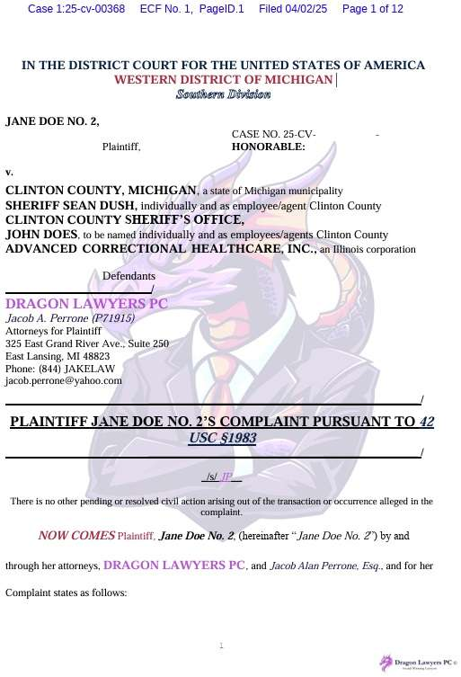

6 Pleading
6.1 Pleading Under the FRCP
Fed R. Civ. P.
Rule 3
A civil action is commenced by filing a complaint with the court.
Rule 7
- (a) Pleadings. Only these pleadings are allowed:
- (1) a complaint;
- (2) an answer to a complaint;
- (3) an answer to a counterclaim designated as a counterclaim;
- (4) an answer to a crossclaim;
- (5) a third-party complaint;
- (6) an answer to a third-party complaint; and
- (7) if the court orders one, a reply to an answer.
- (b) Motions and Other Papers.
- (1) In General. A request for a court order must be made by motion. The motion must:
- (A) be in writing unless made during a hearing or trial;
- (B) state with particularity the grounds for seeking the order; and
- (C) state the relief sought.
- (2) Form. The rules governing captions and other matters of form in pleadings apply to motions and other papers.
- (1) In General. A request for a court order must be made by motion. The motion must:
Rule 8
- (d) Pleading to Be Concise and Direct; Alternative Statements; Inconsistency.
- (1) In General. Each allegation must be simple, concise, and direct. No technical form is required.
- (2) Alternative Statements of a Claim or Defense. A party may set out 2 or more statements of a claim or defense alternatively or hypothetically, either in a single count or defense or in separate ones. If a party makes alternative statements, the pleading is sufficient if any one of them is sufficient.
- (3) Inconsistent Claims or Defenses. A party may state as many separate claims or defenses as it has, regardless of consistency.
- (e) Construing Pleadings. Pleadings must be construed so as to do justice.
Rule 10
- (a) Caption; Names of Parties. Every pleading must have a caption with the court’s name, a title, a file number, and a Rule 7(a) designation. The title of the complaint must name all the parties; the title of other pleadings, after naming the first party on each side, may refer generally to other parties.
- (b) Paragraphs; Separate Statements. A party must state its claims or defenses in numbered paragraphs, each limited as far as practicable to a single set of circumstances. A later pleading may refer by number to a paragraph in an earlier pleading. If doing so would promote clarity, each claim founded on a separate transaction or occurrence—and each defense other than a denial—must be stated in a separate count or defense.
- (c) Adoption by Reference; Exhibits. A statement in a pleading may be adopted by reference elsewhere in the same pleading or in any other pleading or motion. A copy of a written instrument that is an exhibit to a pleading is a part of the pleading for all purposes.
Rule 12
- (e) Motion for a More Definite Statement. A party may move for a more definite statement of a pleading to which a responsive pleading is allowed but which is so vague or ambiguous that the party cannot reasonably prepare a response. The motion must be made before filing a responsive pleading and must point out the defects complained of and the details desired. If the court orders a more definite statement and the order is not obeyed within 14 days after notice of the order or within the time the court sets, the court may strike the pleading or issue any other appropriate order.
- (f) Motion to Strike. The court may strike from a pleading an insufficient defense or any redundant, immaterial, impertinent, or scandalous matter. The court may act:
- (1) on its own; or
- (2) on motion made by a party either before responding to the pleading or, if a response is not allowed, within 21 days after being served with the pleading.
Doe v. Clinton County (W.D. Mich. 2025)
Order Striking Complaint
Each page of plaintiff’s complaint appears on an e-filing which is dominated by a large multi-colored cartoon dragon dressed in a suit, presumably because she is represented by the law firm of “Dragon Lawyers PC © Award Winning Lawyers”. Fed. R. Civ. P. 12(f)(1) allows a court to “strike from a pleading … any redundant, immaterial, impertinent, or scandalous matter.” Use of this dragon cartoon logo is not only distracting, it is juvenile and impertinent. The Court is not a cartoon. Accordingly,
IT IS ORDERED that plaintiff’s complaint is STRICKEN. Plaintiff is directed to file an amended complaint, containing the same allegations as the original complaint, without the cartoon dragon by no later than May 5, 2025.
IT IS FURTHER ORDERED that plaintiff shall not file any other documents with the cartoon dragon or other inappropriate content.

Smith v. Safemarine Corp. (M.D. Louisiana 2024)
Summary of the Facts. Plaintiff sued multiple defendants—including Archer Daniels Midland Company (“ADM”), ARTCO Stevedoring (“ARTCO”), Riverside Shipping (“Riverside”), and Phoenix Bulk Carriers (“Phoenix Bulk”)—in connection with injuries he sustained while working aboard a container ship called the M/V Eva Paris. Defendants filed motions for a more definite statement under Rule 12(e), contending that the complaint contained insufficient factual detail regarding each defendants’ role in the accident and the basis for liability.
The United States Supreme Court has set forth the basic criteria necessary for a complaint to survive a Rule 12(b)(6) motion to dismiss: “While a complaint attacked by a Rule 12(b)(6) motion to dismiss does not need detailed factual allegations, a plaintiff’s obligation to provide the grounds of his entitlement to relief requires more than labels and conclusions, and a formulaic recitation of the elements of a cause of action will not do.” A complaint is also insufficient if it merely “tenders ‘naked assertions’ devoid of ‘further factual enhancement.’” However, “a claim has facial plausibility when the plaintiff pleads the factual content that allows the court to draw the reasonable inference that the defendant is liable for the misconduct alleged.” In order to satisfy the plausibility standard, the plaintiff must show “more than a sheer possibility that a defendant has acted unlawfully.” “Furthermore, while the court must accept well-pleaded facts as true, it will not ‘strain to find inferences favorable to the plaintiff.’” On a motion to dismiss, courts “are not bound to accept as true a legal conclusion couched as a factual allegation.”
Rule 12(e) provides that a motion for more definite statement may be filed when “a pleading to which a responsive pleading is permitted is so vague or ambiguous that a party cannot reasonably be required to frame a responsive pleading.” The standard for evaluating a motion for more definite statement is whether the complaint “is so excessively vague and ambiguous as to be unintelligible and as to prejudice the defendant seriously in attempting to answer it.” Such motions are disfavored and granted sparingly. However, in the words of the Supreme Court, “if a pleading fails to specify the allegations in a manner that provides sufficient notice,” then a Rule 12(e) motion may be appropriate. A party may not use a Rule 12(e) motion as a substitute for discovery; however, “if details are necessary in order to make a vague complaint intelligible, the fact that the details also are subject to the discovery process should not preclude their production under Rule 12(e).”
As other courts have noted, “the line between Rule 12(b)(6) and Rule 12(e)’s pleading standards is a blurry one.” Regarding the relationship between the two, it has been observed that “an implausible claim may well be stated intelligibly enough to enable the framing of a response, and a plausible claim, which would survive a Rule 12(b)(6) motion, may be pleaded vaguely enough to make response impossible, which would make it vulnerable to a Rule 12(e) motion.”
In separate paragraphs, Plaintiff’s Petition for Damages identifies and introduces each Defendant by name and corporate status, as well as their addresses and agents for service of process. Apart from the singular introductory paragraphs, there is no additional information in the Petition regarding ARTCO or ADM. As to the other moving Defendants, Plaintiff additionally alleges that Riverside and Phoenix Bulk, “either individually, collectively, or in combination … owned, operated, assumed contractual responsibility, or otherwise exercised significant control over the M/V EVA PARIS and/or its shipment of bulk concrete, to which Plaintiff was assigned and aboard which Plaintiff was injured.”
The Petition goes on to provide that Plaintiff “lost his balance after stepping in a pile of concrete that had been spilled during unlading of the Vessel’s cargo and not properly cleaned,” as a result of which Plaintiff “fell multiple feet from the deck of the ship into the Mississippi River, and nearly drowned but-for a coworker pulling him out of the water.” Plaintiff then provides a list of eighteen theories of liability without explaining which Defendant may be liable for which theory, and on what grounds. Similarly, Plaintiff alleges that “Defendants owed Plaintiff a duty consistent with the foregoing, and Defendants’ various acts and omissions which proximately caused Plaintiff to encounter the hazardous condition aboard the Vessel consisted of a breach of said duties.” Plaintiff does not provide any detail regarding these “various acts or omissions” allegedly committed by the Defendants or what duties each Defendant breached as a result.
The Court finds that it is entirely unclear from a reading of the Petition what role each Defendant allegedly played in the incident or how each may be liable to Plaintiff. The Petition does not outline the connection between the few factual allegations and the legal theories and fails to specify which theories apply to which Defendants.
“If the pleading is impermissibly vague, the court may act under Rule 12(b)(6) or Rule 12(e), whichever is appropriate, without regard to how the motion is denominated.” Under the present circumstances, the Court finds Defendants’ motions for a more definite statement meritorious under Rule 12(e) because the primary grievance of all the moving Defendants is that the Petition is simply too vague.
The Supreme Court has stated that Rule 12(e) motions are “inextricably linked to Rule 8(a)’s simplified notice pleading standard.” Accordingly, “when evaluating a motion for more definite statement, the Court must assess the complaint in light of the minimal pleading requirements of Rule 8.” Rule 8 provides, in pertinent part: “A pleading that states a claim for relief must contain … a short and plain statement of the claim showing that the pleader is entitled to relief.” The allegations must “give the defendant fair notice of what the plaintiff’s claim is and the grounds upon which it rests.” This pleading standard “does not require ‘detailed factual allegations,’ but it demands more than an unadorned, the-defendant-unlawfully-harmed-me accusation.”
Here, the Petition lacks any factual allegations regarding the subject incident other than a brief description of Plaintiff’s fall and injuries. As to ADM and ARTCO, the Petition contains no information whatsoever regarding their roles in or relationship to the incident. As to Phoenix Bulk and Riverside, Plaintiff broadly alleges that they, “either individually, collectively, or in combination … owned, operated, assumed contractual responsibility, or otherwise exercised significant control over” the Vessel or its shipment of concrete. Other than a bare list of generic theories of liability and conclusory statements, such as “Defendants acted with flagrant and malicious disregard of Plaintiff’s health and safety,” the Petition does not convey with adequate specificity or clarity how the Defendants are responsible for Plaintiff’s alleged injuries. As Phoenix Bulk argues, “because Plaintiff has failed to actually allege any specific facts with respect to Phoenix Bulk, Phoenix Bulk cannot discern exactly what claim Plaintiff files against it or why Phoenix Bulk should be liable in the first instance.” The same is true for each moving Defendant.
The Court finds that Plaintiff’s Petition lacks sufficient specificity to give the moving Defendants adequate notice of grounds upon which the claims are premised. Accordingly, because the Petition is “so vague or ambiguous that the Defendants cannot reasonably prepare a response,” the Court finds the Rule 12(e) motion of each Defendant should be granted.
6.2 Claims for Relief
Fed R. Civ. P.
Rule 8
- (a) Claim for Relief. A pleading that states a claim for relief must contain:
- (1) a short and plain statement of the grounds for the court’s jurisdiction, unless the court already has jurisdiction and the claim needs no new jurisdictional support;
- (2) a short and plain statement of the claim showing that the pleader is entitled to relief; and
- (3) a demand for the relief sought, which may include relief in the alternative or different types of relief.
Rule 9
- (a) Capacity or Authority to Sue; Legal Existence.
- (1) In General. Except when required to show that the court has jurisdiction, a pleading need not allege:
- (A) a party’s capacity to sue or be sued;
- (B) a party’s authority to sue or be sued in a representative capacity; or
- (C) the legal existence of an organized association of persons that is made a party.
- (2) Raising Those Issues. To raise any of those issues, a party must do so by a specific denial, which must state any supporting facts that are peculiarly within the party’s knowledge.
- (1) In General. Except when required to show that the court has jurisdiction, a pleading need not allege:
- (b) Fraud or Mistake; Conditions of Mind. In alleging fraud or mistake, a party must state with particularity the circumstances constituting fraud or mistake. Malice, intent, knowledge, and other conditions of a person’s mind may be alleged generally.
- (c) Conditions Precedent. In pleading conditions precedent, it suffices to allege generally that all conditions precedent have occurred or been performed. But when denying that a condition precedent has occurred or been performed, a party must do so with particularity.
- (f) Time and Place. An allegation of time or place is material when testing the sufficiency of a pleading.
- (g) Special Damages. If an item of special damage is claimed, it must be specifically stated.
Assessing the Sufficiency of a Claim
Under Rule 8(a), a “pleading that states a claim for relief must contain […] a short and plain statement of the claim showing that the pleader is entitled to relief”. This requirement applies to any party (whether in the position of plaintiff or defendant) who asserts a claim, counterclaim, crossclaim, or third-party claim.
A defending party may challenge the sufficiency of a claim under Rule 8(a)(2) with a motion to dismiss for “failure to state a claim upon which relief can be granted”. Fed. R. Civ. P. Rule 12(b)(6). A claim may be dismissed on this basis for either factual or legal insufficiency:
A claim is factually insufficient if the facts alleged, even assuming they are true, would not satisfy the elements of a claim. For example, if a plaintiff asserts a claim for negligence, but fails to allege any injury resulting from the defendant’s conduct, the claim would be factually insufficient, because injury is a necessary element of the claim.
A claim is legally insufficient if the law does not recognize the purported claim at all. For example, if a plaintiff sues for “tortious bad taste in music”, alleging that the defendant incessantly played “We Built this City” by The Starship and “Rockstar” by Nickleback, the claim would be legally insufficient, because the law (regrettably) doesn’t recognize any such claim.
In Conley v. Gibson, 355 U.S. 41 (1957), the Supreme Court interpreted Rule 8(a)(2) to establish a “notice pleading” pleading standard, requiring only that the plaintiff “give the defendant fair notice of what the claim is and the grounds upon which it rests,” without the necessity for detailed factual allegations. This standard rested on the structure of the Federal Rules of Civil Procedure, under which the assertion of claims and the disclosure of facts are allocated to separate phases of a suit. At the pleading stage, “a complaint should not be dismissed for failure to state a claim unless it appears beyond doubt that the plaintiff can prove no set of facts in support of his claim which would entitle him to relief.” The discovery rules then give the parties an opportunity to establish the facts in full.
A half-century later, a pair of Supreme Court decisions jettisoned the Conley “no set of facts” standard and adopted a more demanding approach.
Bell Atlantic Corp. v. Twombly, 550 U.S. 544 (2007)
In Twombly, the plaintiffs alleged that four telecommunications companies had “engaged in a contract, combination or conspiracy to prevent competitive entry in their respective local telephone and/or high speed internet services markets by, among other things, agreeing not to compete with one another and to stifle attempts by others to compete with them and otherwise allocating customers and markets to one another in violation of Section 1 of the Sherman Antitrust Act, 15 U.S.C. §1.” In support of that claim, the complaint alleged that the defendants “engaged in parallel conduct” to restrict competition, including “making unfair agreements with [competing providers] for access to [the defendants’] networks, providing inferior connections to the networks, overcharging, and billing in ways designed to sabotage the [competing providers’] relations with their own customers.” The complaint also alleged that the defendants agreed to refrain from competing with one another, by not pursuing business opportunities in markets already serviced by other defendants.
In the absence of any meaningful competition between [the defendants] in one another’s markets, and in light of the parallel course of conduct that each engaged in to prevent competition from [other providers] within their respective local telephone and/or high speed internet services markets and the other facts and market circumstances alleged above, Plaintiffs allege upon information and belief that Defendants have entered into a contract, combination or conspiracy to prevent competitive entry in their respective local telephone and/or high speed internet services markets and have agreed not to compete with one another and otherwise allocated customers and markets to one another.
The Court held that the allegations in the complaint were insufficient to state a claim under §1 of the Sherman Act, which requires proof of a “contract, combination, or conspiracy, in restraint of trade or commerce”.
A plaintiff’s obligation to provide the “grounds” of his “entitlement to relief” requires more than labels and conclusions, and a formulaic recitation of the elements of a cause of action will not do. Factual allegations must be enough to raise a right to relief above the speculative level, on the assumption that all the allegations in the complaint are true (even if doubtful in fact).
An allegation of parallel conduct and a bare assertion of conspiracy will not suffice [to state a claim under Sherman Act §1]. Without more, parallel conduct does not suggest conspiracy, and a conclusory allegation of agreement at some unidentified point does not supply facts adequate to show illegality. Hence, when allegations of parallel conduct are set out in order to make a §1 claim, they must be placed in a context that raises a suggestion of a preceding agreement, not merely parallel conduct that could just as well be independent action.”
To assess whether the inference of an agreement was plausible, the majority considered “an obvious alternative explanation”: While the alleged parallel conduct was “consistent with conspiracy,” it was, in the majority’s view, “as much in line with a wide swath of rational and competitive business strategy unilaterally prompted by common perceptions of the market.” Finding that “the plaintiffs here have not nudged their claims across the line from conceivable to plausible,” the majority concluded that “their complaint must be dismissed.”
Ashcroft v. Iqbal, 556 U.S. 662 (2009)
Javaid Iqbal sued various federal government officials, including former Attorney General John Ashcroft and FBI Director Robert Mueller, over his arrest and detention as a “a person ‘of high interest’ to the September 11 investigation”. Iqbal, a citizen of Pakistan and a Muslim, alleged that Ashcroft and Mueller “adopted an unconstitutional policy that subjected him to harsh conditions of confinement on account of his race, religion, or national origin.”
The complaint contends that petitioners designated respondent a person of high interest on account of his race, religion, or national origin, in contravention of the First and Fifth Amendments to the Constitution. The complaint alleges that “the FBI, under the direction of Defendant MUELLER, arrested and detained thousands of Arab Muslim men as part of its investigation of the events of September 11.” It further alleges that “the policy of holding post-September-11th detainees in highly restrictive conditions of confinement until they were ‘cleared’ by the FBI was approved by Defendants ASHCROFT and MUELLER in discussions in the weeks after September 11, 2001.” Lastly, the complaint posits that petitioners “each knew of, condoned, and willfully and maliciously agreed to subject” respondent to harsh conditions of confinement “as a matter of policy, solely on account of his religion, race, and/or national origin and for no legitimate penological interest.” The pleading names Ashcroft as the “principal architect” of the policy, and identifies Mueller as “instrumental in its adoption, promulgation, and implementation,”
Iqbal’s claims were based on Bivens v. Six Unknown Fed. Narcotics Agents, 403 U.S. 388 (1971):
In Bivens—proceeding on the theory that a right suggests a remedy—this Court “recognized for the first time an implied private action for damages against federal officers alleged to have violated a citizen’s constitutional rights.”
In the limited settings where Bivens does apply, the implied cause of action is the “federal analog to suits brought against state officials under 42 U.S.C. §1983.” Based on the rules our precedents establish, respondent correctly concedes that Government officials may not be held liable for the unconstitutional conduct of their subordinates under a theory of respondeat superior. Because vicarious liability is inapplicable to Bivens and §1983 suits, a plaintiff must plead that each Government official defendant, through the official’s own individual actions, has violated the Constitution.
The factors necessary to establish a Bivens violation will vary with the constitutional provision at issue. Where the claim is invidious discrimination in contravention of the First and Fifth Amendments, our decisions make clear that the plaintiff must plead and prove that the defendant acted with discriminatory purpose. To state a claim based on a violation of a clearly established right, respondent must plead sufficient factual matter to show that petitioners adopted and implemented the detention policies at issue not for a neutral, investigative reason but for the purpose of discriminating on account of race, religion, or national origin.
The Court reiterated the standard adopted in Twombly:
Rule 8 does not require “detailed factual allegations,” but it demands more than an unadorned, the-defendant-unlawfully-harmed-me accusation. A pleading that offers “labels and conclusions” or “a formulaic recitation of the elements of a cause of action will not do.” Nor does a complaint suffice if it tenders “naked assertions” devoid of “further factual enhancement.”
To survive a motion to dismiss, a complaint must contain sufficient factual matter, accepted as true, to “state a claim to relief that is plausible on its face.” A claim has facial plausibility when the plaintiff pleads factual content that allows the court to draw the reasonable inference that the defendant is liable for the misconduct alleged. The plausibility standard is not akin to a “probability requirement,” but it asks for more than a sheer possibility that a defendant has acted unlawfully. Where a complaint pleads facts that are “merely consistent with” a defendant’s liability, it “stops short of the line between possibility and plausibility of ‘entitlement to relief.’”
Two working principles underlie our decision in Twombly. First, the tenet that a court must accept as true all of the allegations contained in a complaint is inapplicable to legal conclusions. Threadbare recitals of the elements of a cause of action, supported by mere conclusory statements, do not suffice. Rule 8 marks a notable and generous departure from the hypertechnical, code-pleading regime of a prior era, but it does not unlock the doors of discovery for a plaintiff armed with nothing more than conclusions. Second, only a complaint that states a plausible claim for relief survives a motion to dismiss. Determining whether a complaint states a plausible claim for relief will, as the Court of Appeals observed, be a context-specific task that requires the reviewing court to draw on its judicial experience and common sense. But where the well-pleaded facts do not permit the court to infer more than the mere possibility of misconduct, the complaint has alleged—but it has not “shown”—“that the pleader is entitled to relief.” Fed. Rule Civ. Proc. 8(a)(2).
In keeping with these principles a court considering a motion to dismiss can choose to begin by identifying pleadings that, because they are no more than conclusions, are not entitled to the assumption of truth. While legal conclusions can provide the framework of a complaint, they must be supported by factual allegations. When there are well-pleaded factual allegations, a court should assume their veracity and then determine whether they plausibly give rise to an entitlement to relief.
Applying that standard to Iqbal’s complaint, the majority concluded that the allegations were insufficient to state Bivens claims against Ashcroft and Mueller.
We begin our analysis by identifying “the allegations in the complaint that are not entitled to the assumption of truth. Respondent pleads that petitioners”knew of, condoned, and willfully and maliciously agreed to subject him” to harsh conditions of confinement “as a matter of policy, solely on account of his religion, race, and/or national origin and for no legitimate penological interest.” The complaint alleges that Ashcroft was the “principal architect” of this invidious policy, and that Mueller was “instrumental” in adopting and executing it. These bare assertions, much like the pleading of conspiracy in Twombly, amount to nothing more than a “formulaic recitation of the elements” of a constitutional discrimination claim, namely, that petitioners adopted a policy “‘because of,’ not merely ‘in spite of,’ its adverse effects upon an identifiable group,” As such, the allegations are conclusory and not entitled to be assumed true. To be clear, we do not reject these bald allegations on the ground that they are unrealistic or nonsensical. We do not so characterize them any more than the Court in Twombly rejected the plaintiffs’ express allegation of a “‘contract, combination or conspiracy to prevent competitive entry,’” because it thought that claim too chimerical to be maintained. It is the conclusory nature of respondent’s allegations, rather than their extravagantly fanciful nature, that disentitles them to the presumption of truth.
We next consider the factual allegations in respondent’s complaint to determine if they plausibly suggest an entitlement to relief. The complaint alleges that “the FBI, under the direction of Defendant MUELLER, arrested and detained thousands of Arab Muslim men as part of its investigation of the events of September 11.” It further claims that “the policy of holding post-September-11th detainees in highly restrictive conditions of confinement until they were ‘cleared’ by the FBI was approved by Defendants ASHCROFT and MUELLER in discussions in the weeks after September 11, 2001.” Taken as true, these allegations are consistent with petitioners’ purposefully designating detainees “of high interest” because of their race, religion, or national origin. But given more likely explanations, they do not plausibly establish this purpose.
The September 11 attacks were perpetrated by 19 Arab Muslim hijackers who counted themselves members in good standing of al Qaeda, an Islamic fundamentalist group. Al Qaeda was headed by another Arab Muslim—Osama bin Laden—and composed in large part of his Arab Muslim disciples. It should come as no surprise that a legitimate policy directing law enforcement to arrest and detain individuals because of their suspected link to the attacks would produce a disparate, incidental impact on Arab Muslims, even though the purpose of the policy was to target neither Arabs nor Muslims. On the facts respondent alleges the arrests Mueller oversaw were likely lawful and justified by his nondiscriminatory intent to detain aliens who were illegally present in the United States and who had potential connections to those who committed terrorist acts. As between that “obvious alternative explanation” for the arrests, and the purposeful, invidious discrimination respondent asks us to infer, discrimination is not a plausible conclusion.
But even if the complaint’s well-pleaded facts give rise to a plausible inference that respondent’s arrest was the result of unconstitutional discrimination, that inference alone would not entitle respondent to relief. It is important to recall that respondent’s complaint challenges neither the constitutionality of his arrest nor his initial detention. Respondent’s constitutional claims against petitioners rest solely on their ostensible “policy of holding post-September-11th detainees” in the [maximum security special housing unit] once they were categorized as “of high interest.” To prevail on that theory, the complaint must contain facts plausibly showing that petitioners purposefully adopted a policy of classifying post-September-11 detainees as “of high interest” because of their race, religion, or national origin.
This the complaint fails to do. Though respondent alleges that various other defendants, who are not before us, may have labeled him a person “of high interest” for impermissible reasons, his only factual allegation against petitioners accuses them of adopting a policy approving “restrictive conditions of confinement” for post-September-11 detainees until they were “‘cleared’ by the FBI.” Accepting the truth of that allegation, the complaint does not show, or even intimate, that petitioners purposefully housed detainees in the ADMAX SHU due to their race, religion, or national origin. All it plausibly suggests is that the Nation’s top law enforcement officers, in the aftermath of a devastating terrorist attack, sought to keep suspected terrorists in the most secure conditions available until the suspects could be cleared of terrorist activity. Respondent does not argue, nor can he, that such a motive would violate petitioners’ constitutional obligations. He would need to allege more by way of factual content to “nudge” his claim of purposeful discrimination “across the line from conceivable to plausible.”
Williams v. Mitchell (4th Circuit 2024)
This case, now before us after the district court’s grant of motions to dismiss based on the insufficiency of the pleadings, involves a series of interactions between Plaintiff Brandon Williams and Norfolk, Virginia, police officers. Officer John D. McClanahan first falsely charged Williams with misdemeanor trespassing. He then perjured himself at trial to obtain a conviction. On appeal, Williams exposed McClanahan’s perjury through a recording he had taken of the incident, and the state appellate court ordered the charge dismissed. Two weeks later, Norfolk police officers, including McClanahan, responded to an accident in which Williams had been hit by a speeding drunk driver. They recognized him immediately as “the guy that gave McClanahan a ration of shit.” The officers allegedly falsified information on the accident report with the intent of depriving Williams of his property right to sue the other driver.
Williams brought a claim of retaliation for the exercise of his First and Sixth Amendment rights against the police officers. He also brought a conspiracy claim and two Virginia state law claims for intentional infliction of emotional distress (“IIED”), among others. The district court granted the officers’ motions to dismiss Williams’ retaliation claim, holding that he failed to plead an adverse action, and granted their motions as to his conspiracy claim upon finding that he failed to plead a constitutional violation. The court dismissed without prejudice Williams’ state law IIED claims by declining to exercise supplemental jurisdiction.
Considering the facts as pled, Williams has adequately alleged that the officers’ intentional misrepresentation on the accident report would likely deter him from recording police activity and defending himself at trial in the future. Therefore, we reverse the district court’s dismissal of his retaliation claim. Having thus found a plausible constitutional violation at this stage, we vacate the court’s dismissal of his conspiracy claim and remand the claim for reconsideration consistent with this opinion. Finally, we vacate the court’s dismissal of Williams’ IIED claims, which are also remanded for consideration consistent with this opinion.
The following facts were alleged in Williams’ Second Amended Complaint. In January 2020, Brandon Williams was detained by Norfolk, Virginia, police officer John D. McClanahan on a misdemeanor trespassing charge. Williams recorded his interaction with McClanahan. At trial on the trespassing charge, McClanahan testified falsely and Williams was convicted. Williams appealed his conviction and used his recording to show that McClanahan had lied under oath. The appeals court heard Williams’ argument and dismissed the charges against him on September 15, 2020, recognizing that he never should have been prosecuted.
On September 30, 2020, Williams was seriously injured in a car accident in Norfolk, Virginia. Williams was operating his vehicle carefully when he was hit by Rex Aman, who was driving over seventy-five miles per hour and swerving outside his lane. When various Norfolk police officers including McClanahan arrived at the scene to investigate the accident, they pointed at and talked about Williams. Officer Rodney Van Faussien said, while pointing to Williams, “this is the guy that gave McClanahan a ration of shit,” referring to Williams’ defense of his trespassing charge. Aman’s blood alcohol level was .30—well above the legal limit—and the officers learned of Aman’s high speed from eyewitnesses.
Despite information from eyewitnesses, a debris field showing a high-impact accident, and Aman’s blood alcohol level, police officers falsely stated on the accident report that Aman was driving the speed limit, had not been drinking, and that his car had suffered a steering defect. This was allegedly done with the intent to deny Williams his rights by minimizing the accident and deflecting blame from Aman.
As for his retaliation claim, Williams alleged in the operative complaint that “by recording McClanahan during his arrest on the trespassing charge, and by pointing out that McClanahan had lied during his testimony on the charge, Williams was exercising his First Amendment rights.” He continued that “by insisting on a trial of the trespassing charge and by challenging the testimony of McClanahan, Williams was exercising his Sixth Amendment rights.” Williams claimed that Defendants “intentionally retaliated against him for the exercise of his rights by misrepresenting facts on the accident report … because they realized that he was the person who ‘gave McClanahan a ration of shit,’” and they “did so with the intent to deprive Williams of his property right to bring a claim for the injuries from the accident by trying to minimize the accident and deflect blame from Aman.” As a result of Defendants’ actions, “Williams has suffered both physical and emotional injuries which have included sleep disturbance, actual physical pain, and a significant exacerbation of post-traumatic stress disorder.”
Regarding conspiracy, Williams alleged that “Defendants acted jointly and in concert for the purposes of denying Williams his constitutional rights.”
Williams also brought two IIED claims, one related to McClanahan’s perjury, and the second related to the Defendants’ conduct at the accident scene. He alleged that both incidents have caused him physical and emotional injuries. ims.
We review a district court’s dismissal under Rule 12(b)(6) de novo and view the complaint in the light most favorable to the plaintiff, accepting as true all well-pleaded allegations.
Before us on appeal is the district court’s dismissal of Williams’ retaliation, conspiracy, and IIED claims, which will each be addressed in turn.
A.
A plaintiff seeking to recover for First and Sixth Amendment retaliation must allege that (1) he engaged in protected activity, (2) the defendant took some action that adversely affected his constitutional rights, and (3) there was a causal relationship between his protected activity and the defendant’s conduct. We begin by addressing the first and third elements, which are straightforwardly satisfied.
As for the first element, it is uncontested that Williams engaged in protected First Amendment activity when he recorded his initial interaction with McClanahan. “Creating and disseminating information is protected speech under the First Amendment,” including “recording police encounters.” It is also undisputed that Williams engaged in protected Sixth Amendment activity by demanding a trial on the trespassing charge and challenging McClanahan’s testimony at trial. The right to a trial and to confront one’s witnesses are constitutionally protected rights under the Sixth Amendment.
Williams has also adequately pled the third element. For a causal relationship, a plaintiff must show “at the very least that the defendant was aware of plaintiff’s engaging in protected activity,” and “some degree of temporal proximity.” Here, Williams has sufficiently alleged that the Defendants were aware of his First and Sixth Amendment activity: Van Faussien pointed at Williams and stated to fellow officers, “this is the guy that gave McClanahan a ration of shit.” And as for temporal proximity, the accident occurred on September 30, 2020, only fifteen days after the appeals court dismissed the charges against Williams following his presentation of evidence showing that McClanahan had lied at trial.
Finally, although the second element requires closer analysis, we also find that Williams adequately alleged that Defendants’ retaliatory action adversely affected his First and Sixth Amendment rights. To satisfy this element, a plaintiff must show that a defendant’s conduct resulted in more than a de minimis inconvenience to the exercise of the plaintiff’s rights; rather, it must chill the exercise of such rights such that it would likely deter “a person of ordinary firmness” from exercise in the future. While the defendant’s conduct must chill the exercise of a constitutional right, the conduct need not constitute a constitutional violation in itself. This element requires a “fact intensive inquiry that focuses on the status of the speaker, the status of the retaliator, the relationship between the speaker and the retaliator, and the nature of the retaliatory acts.” “Context matters,” as “the significance of any given act of retaliation will often depend upon the particular circumstances.
According to Williams, the officers’ adverse action was their intentional misrepresentation of facts on the accident report. In assessing whether this action would chill the exercise of his First and Sixth Amendment rights as pled, we consider the relative statuses of Williams and the officers: Here, there is a significant power imbalance in Williams’ relationship with the police, as he is a Black man who had recently exposed an officer’s perjury. We must also account for the additional context. The police had previously lied to charge and convict Williams with misdemeanor trespassing, and then at the accident scene, the officers allegedly pointed at him, talked about him, and lied again with the intent of depriving him of his rights, despite his being severely injured and traumatized in the immediate aftermath of a high-speed crash. Finally, we must also consider the nature of the retaliatory acts. The adverse action here is not the mere misrepresentation of facts on an accident report. It is the officers’ intentional misrepresentation—the falsity of the report plus the animus motivating it.
That the police would purposefully falsify an accident report as payback for Williams proving his innocence is egregious, and particularly so where the officers sought to deprive Williams of a potential claim against a drunk driver where Williams was clearly not at fault. This demonstrates the extreme lengths these officers were willing to go to punish Williams for exercising his constitutional rights. These circumstances would be enough to deter a person of ordinary firmness from exercising their First and Sixth Amendment rights again in the future.
Contrary to Defendants’ contentions, the fact that Williams was able to pursue and settle a civil lawsuit against Aman does not doom his retaliation claim. His claim stems from the officers’ misrepresentation of information in an intentional attempt to interfere with Williams’ rights, which is exactly the kind of government conduct that would chill someone from exercising their constitutional rights in the future; it does not matter that such attempted interference may have failed. Likewise, Williams’ success in defending against his trespassing charge does not counsel a different outcome, as it was this defense that led to law enforcement’s deliberate attempt to deprive him of his property rights. As Williams’ counsel articulated at oral argument, given how the officers’ animus came to bear, “a reasonable person in that situation is going to think twice: Do I want to endure that again … just to challenge a simple misdemeanor trespassing charge?” It is at least plausible that Williams would be hesitant to record later police encounters or demand a trial knowing that it could result in future—and perhaps more grievous—police misrepresentations with the express purpose of causing him harm.
The accident report’s inadmissibility in a civil lawsuit does not change this analysis. The report is indicative of how police officers would likely testify at trial, and could also be used to refresh an officer’s recollection or for impeachment purposes. But beyond that, the fact that the police would eschew their duties and lie with the intent of depriving Williams of his rights—regardless of whether the officers’ falsification actually impeded any civil lawsuit against Aman—is materially adverse.
Viewed in the light most favorable to Williams and at this stage of the proceedings, law enforcement’s intentional misrepresentation would likely deter a person of ordinary firmness from recording police activity, challenging an officer’s testimony, and vigorously defending oneself at trial in the future.
Williams has thus alleged a First and Sixth Amendment retaliation claim sufficient to survive a motion to dismiss, and the district court’s opinion granting Defendants’ motions on this claim must be reversed.
B.
To state a claim for civil conspiracy under 42 U.S.C. §1983, a plaintiff must allege that defendants “acted jointly in concert and that some overt act was done in furtherance of the conspiracy which resulted in [his] deprivation of a constitutional right.”
The district court’s analysis on this claim “began, and ended,” with whether Defendants’ alleged conduct resulted in a violation of Williams’ constitutional rights. The court only considered potential constitutional violations under the Fifth and Fourteenth Amendments as well as a constitutional right to access the courts. But retaliation can be the constitutional violation for such a conspiracy claim, and counsel for Defendants Mitchell, Stone, and Van Faussien admitted at oral argument that reversal on the retaliation claim would necessitate remand on the conspiracy claim.
Having found that Williams has adequately alleged the deprivation of a constitutional right—that being his claim of First and Sixth Amendment retaliation—Williams’ conspiracy claim should be remanded to the district court for reconsideration.
Johnson v. Cricket Council USA, Inc. (E.D.N.C. 2023)
On April 13, 2021, Johnson and Cricket Council USA, Inc. entered into a real property contract (the “Agreement”) for the purchase and sale of 69.94 acres of land in Fayetteville, North Carolina for $1,259,460.00. The Agreement defined the “Contract Date” as the date when the “Agreement had been fully executed by both Buyer and Seller.” Thus, the contract date was April 13, 2021. The Agreement defined the “Examination Period” as “the period beginning on the first day after the Contract Date and extending through 5:00 pm (based upon time at the locale of the Property) on 90 business days from the contract date.” The Agreement stated that “Buyer may extend the Examination Period up to three 30 day extensions, upon each extension buyer will deposit an additional $2,500 non refundable.” And the Agreement noted that “TIME IS OF THE ESSENCE AS TO THE EXAMINATION PERIOD.” The Agreement defined the “Closing Date” as 30 days after the end of the Examination Period upon approval from the city. The Agreement did not define “approval from the city,” and the Closing Date section did not include a “time is of the essence” provision.
In October 2021, defendants prepared an Amendment (the “Amendment”) to the Agreement, and their agents presented the Agreement to Johnson. When Johnson received the Amendment, he was not represented by an agent or attorney. The Amendment redefined the Closing Date to be “on or before the day which is Thirty (30) days after Buyer obtains all Governmental and Municipal Permits including but not limited to Master Site Plan and Building Construction Plans that are required to build Multifamily Units including Commercial Development and Sports Fields on the Subject Land.”
According to Johnson, on November 15, 2021, he executed the Amendment but the Amendment was dated October 28, 2021. Johnson alleges that the Amendment is unenforceable for various reasons, including a lack of consideration, the closing date is so vague and ambiguous as to render it meaningless, the Agreement is not binding on defendants, and because defendants failed to properly exercise the three 30-day extensions under the Agreement.
Defendants respond that Cricket Council USA, Inc. extended the examination period three times before seeking to amend the Agreement. According to defendants, the extensions continued the examination period until Thursday, November 18, 2021. Moreover, 30 days from the end of that examination period was Saturday, December 18, 2021, which was then extended until the next business day, Monday, December 20, 2021. Defendants also contend that when Cricket Council USA, Inc. signed the Amendment, Cricket Council USA, Inc. paid $7,500.00 in nonrefundable extension funds in escrow to Johnson. On January 23, 2023, Johnson notified defendants that he was terminating the Agreement.
To withstand a Rule 12(b)(6) motion, a pleading “must contain sufficient factual matter, accepted as true, to state a claim to relief that is plausible on its face.” In considering the motion, the court must construe the facts and reasonable inferences “in the light most favorable to the non-moving party.” A court need not accept as true a complaint’s legal conclusions, “unwarranted inferences, unreasonable conclusions, or arguments.” Rather, a plaintiff’s factual allegations must “nudge his claims,” beyond the realm of “mere possibility” into “plausibility.”
When evaluating a motion to dismiss, a court considers the pleadings and any materials “attached or incorporated into the complaint.” A court may also consider a document submitted by a moving party if it is “integral to the complaint and there is no dispute about the document’s authenticity.” Additionally, a court may take judicial notice of public records without converting the motion to dismiss into a motion for summary judgment.
As for Johnson’s breach of contract claim against Cricket Council USA, Inc., Johnson must plausibly allege “the existence of a contract between plaintiff and defendant, the specific provisions breached, the facts constituting the breach, and the amount of damages resulting to plaintiff from such breach.” Johnson alleges that Cricket Council USA, Inc. breached the Agreement by “(1) failing to pay the additional earnest money deposits required to extend the original Examination Period; (2) failing to close within the time allowed thereby, or within a commercially reasonable time under the circumstances; and (3) such other acts and omissions as may be shown at trial.”
As for Johnson’s allegations about earnest money deposits, Johnson plausibly alleges that Cricket Council USA, Inc. did not properly pay to extend the examination period of the Agreement. Specifically, Johnson alleges that the Agreement required Cricket Council USA, Inc. to pay Johnson $2,500 before each 30-day extension of the examination period. See id. Johnson also alleges that the Agreement required a $2,500 payment as consideration for the extension and that Cricket Council USA, Inc. did not make the necessary $2,500 payment for any extension of the examination period. Johnson has plausibly alleged a breach of contract claim against Cricket Council USA, Inc.
As for Johnson’s allegations that Cricket Council USA, Inc. failed to close in a reasonable time, absent a “time is of the essence” clause, the parties to a real property purchase agreement are allowed a “reasonable time after the date set for closing to complete performance.” The Amendment states that Cricket Council USA, Inc. had 30 days to close after obtaining the necessary permits and approvals. On January 23, 2023, when Johnson purported to terminate the Agreement, defendants argue that Cricket Council USA, Inc. had not obtained the necessary permits. Johnson, however, alleges that he had heard nothing from defendants about their efforts toward closing, did not know if Cricket Council USA, Inc. obtained any permits, and more than a year had passed between signing the Amendment and terminating the Agreement. The parties dispute whether defendants told Johnson that Cricket Council USA, Inc. would continue to honor the Agreement and whether defendants would soon close. Johnson has plausibly alleged that Cricket Council USA, Inc. failed to close in a reasonable time.
As for Johnson’s UDTPA claim against the defendants, a plaintiff must plausibly allege: (1) an unfair or deceptive act or practice, (2) in or affecting commerce, and (3) which proximately caused injury to the plaintiff. “Whether an act or practice is an unfair or deceptive practice … is a question of law for the court.”
A “mere breach of contract, even if intentional, is not an unfair or deceptive act under the UDTPA.” North Carolina law “does not permit a party to transmute a breach of contract claim into a … UDTPA claim … because awarding punitive or treble damages would destroy the parties’ bargain.” If substantial aggravating circumstances accompany a breach of contract, then those circumstances can create an UDTPA claim. Generally, such aggravating circumstances include some element of deception, such as forged documents, lies, or fraudulent inducements.
Johnson alleges that defendants had superior bargaining power, that Johnson had no experience with real estate, that defendants caused Johnson to “enter into the Amendment in an unfair and deceptive manner,” and that defendants disguised their intentions during contract negotiations. Johnson also alleges upon information and belief that defendants
made false representations to Plaintiff or concealed material facts from Plaintiff concerning: (1) their true intentions with regard to Plaintiff’s property; (2) their true intentions with regard to whether they would actually close on the purchase of Plaintiff’s property; (3) their acts and omissions concerning moving forward with obtaining Government and Municipal Permits and Construction Plans concerning the Subject Property; (4) their ability to close on the Subject Property; and, (5) such other acts and omissions as may be shown at trial.
Johnson’s allegations are conclusory and do not plausibly allege a UDTPA claim. Thus, the court dismisses Johnson’s UDTPA claim.
As for Johnson’s request to pierce the corporate veil, the court must assess whether Johnson plausibly alleges sufficient facts that would, if believed, tend to establish the required elements to pierce the corporate veil under North Carolina’s “instrumentality rule.” In order to prevail under the instrumentality rule, the aggrieved party must establish three elements: “(1) stockholders’ control of the corporation amounts to ‘complete domination’ with respect to the transaction at issue; (2) stockholders’ use of this control to commit a wrong …; and (3) this wrong or breach of duty must be the proximate cause of the injury.”
Defendants contend that Johnson fails to plausibly allege these required elements. Johnson responds that he has sufficiently pled facts for the court to pierce Cricket Council USA, Inc.’s corporate veil.
In Fischer, the North Carolina Court of Appeals cited numerous factual allegations in the plaintiff’s complaint that sufficiently pled a claim to pierce the corporate veil under the instrumentality rule’s “control” element. To name a few, the plaintiff [in Fischer] cited specific asset transfers used to subvert the corporate form, noted that the owner failed to file annual reports with the Secretary of State and otherwise comply with corporate formalities, and alleged that the actions of the owner left the corporation in question insolvent. The North Carolina Court of Appeals noted that these allegations addressed three of the four elements of control: “inadequate capitalization,” “noncompliance with corporate formalities,” and “complete domination and control of the corporation so that it has no independent identity.”
Although the analysis of the control element does not depend on the presence or absence of any particular factor, Johnson’s sole reliance on the factual allegations that Qureshi is the “sole or dominant owner of Cricket Council,” “is the President of Cricket Council,” and “exercises complete dominion and control over Cricket Council” does not suffice. Without more facts indicating “complete domination, not only of finances, but of policy and business practices … so that the corporate entity … had … no separate mind, will or existence of its own,” Johnson’s allegations are conclusory and do not plausibly support piercing the corporate veil. Because Johnson’s allegations fail under the first “control” element of the instrumentality rule, the court need not address if the breach of contract claim is within the “wrongs” contemplated by the second element or address proximate cause. Thus, the court dismisses Johnson’s request to pierce the corporate veil.
6.3 Responsive Pleadings
Fed R. Civ. P.
Rule 8
- (b) Defenses; Admissions and Denials.
- (1) In General. In responding to a pleading, a party must:
- (A) state in short and plain terms its defenses to each claim asserted against it; and
- (B) admit or deny the allegations asserted against it by an opposing party.
- (2) Denials—Responding to the Substance. A denial must fairly respond to the substance of the allegation.
- (3) General and Specific Denials. A party that intends in good faith to deny all the allegations of a pleading—including the jurisdictional grounds—may do so by a general denial. A party that does not intend to deny all the allegations must either specifically deny designated allegations or generally deny all except those specifically admitted.
- (4) Denying Part of an Allegation. A party that intends in good faith to deny only part of an allegation must admit the part that is true and deny the rest.
- (5) Lacking Knowledge or Information. A party that lacks knowledge or information sufficient to form a belief about the truth of an allegation must so state, and the statement has the effect of a denial.
- (6) Effect of Failing to Deny. An allegation—other than one relating to the amount of damages—is admitted if a responsive pleading is required and the allegation is not denied. If a responsive pleading is not required, an allegation is considered denied or avoided.
- (1) In General. In responding to a pleading, a party must:
- (c) Affirmative Defenses.
- (1) In General. In responding to a pleading, a party must affirmatively state any avoidance or affirmative defense, including:
- • accord and satisfaction;
- • arbitration and award;
- • assumption of risk;
- • contributory negligence;
- • duress;
- • estoppel;
- • failure of consideration;
- • fraud;
- • illegality;
- • injury by fellow servant;
- • laches;
- • license;
- • payment;
- • release;
- • res judicata;
- • statute of frauds;
- • statute of limitations; and
- • waiver.
- (2) Mistaken Designation. If a party mistakenly designates a defense as a counterclaim, or a counterclaim as a defense, the court must, if justice requires, treat the pleading as though it were correctly designated, and may impose terms for doing so.
- (1) In General. In responding to a pleading, a party must affirmatively state any avoidance or affirmative defense, including:
Rule 12
- (a) Time to Serve a Responsive Pleading.
- (1) In General. Unless another time is specified by this rule or a federal statute, the time for serving a responsive pleading is as follows:
- (A) A defendant must serve an answer:
- (i) within 21 days after being served with the summons and complaint; or
- (ii) if it has timely waived service under Rule 4(d), within 60 days after the request for a waiver was sent, or within 90 days after it was sent to the defendant outside any judicial district of the United States.
- (B) A party must serve an answer to a counterclaim or crossclaim within 21 days after being served with the pleading that states the counterclaim or crossclaim.
- (C) A party must serve a reply to an answer within 21 days after being served with an order to reply, unless the order specifies a different time.
- (A) A defendant must serve an answer:
- (4) Effect of a Motion. Unless the court sets a different time, serving a motion under this rule alters these periods as follows:
- (A) if the court denies the motion or postpones its disposition until trial, the responsive pleading must be served within 14 days after notice of the court’s action; or
- (B) if the court grants a motion for a more definite statement, the responsive pleading must be served within 14 days after the more definite statement is served.
- (1) In General. Unless another time is specified by this rule or a federal statute, the time for serving a responsive pleading is as follows:
- (b) How to Present Defenses. Every defense to a claim for relief in any pleading must be asserted in the responsive pleading if one is required. But a party may assert the following defenses by motion:
- (1) lack of subject-matter jurisdiction;
- (2) lack of personal jurisdiction;
- (3) improper venue;
- (4) insufficient process;
- (5) insufficient service of process;
- (6) failure to state a claim upon which relief can be granted; and
- (7) failure to join a party under Rule 19.
- A motion asserting any of these defenses must be made before pleading if a responsive pleading is allowed. If a pleading sets out a claim for relief that does not require a responsive pleading, an opposing party may assert at trial any defense to that claim. No defense or objection is waived by joining it with one or more other defenses or objections in a responsive pleading or in a motion.
- (g) Joining Motions.
- (1) Right to Join. A motion under this rule may be joined with any other motion allowed by this rule.
- (2) Limitation on Further Motions. Except as provided in Rule 12(h)(2) or
- (3) a party that makes a motion under this rule must not make another motion under this rule raising a defense or objection that was available to the party but omitted from its earlier motion.
- (h) Waiving and Preserving Certain Defenses.
- (1) When Some Are Waived. A party waives any defense listed in Rule 12(b)(2)–(5) by:
- (A) omitting it from a motion in the circumstances described in Rule 12(g)(2); or
- (B) failing to either:
- (i) make it by motion under this rule; or
- (ii) include it in a responsive pleading or in an amendment allowed by Rule 15(a)(1) as a matter of course.
- (2) When to Raise Others. Failure to state a claim upon which relief can be granted, to join a person required by Rule 19(b), or to state a legal defense to a claim may be raised:
- (A) in any pleading allowed or ordered under Rule 7(a);
- (B) by a motion under Rule 12(c); or
- (C) at trial.
- (3) Lack of Subject-Matter Jurisdiction. If the court determines at any time that it lacks subject-matter jurisdiction, the court must dismiss the action.
- (1) When Some Are Waived. A party waives any defense listed in Rule 12(b)(2)–(5) by:
Reis Robotics USA, Inc. v. Concept Industries (N.D. Ill. 2006)
This is a diversity action governed by Illinois law in which Plaintiff Reis Robotics USA, Inc. (“Reis”) filed a complaint against Defendant Concept Industries, Inc. (“Concept”), seeking redress for breach of contract. Concept has answered the complaint, asserted six affirmative defenses, and brought seven counterclaims against Reis. Reis now moves to strike and dismiss Concept’s affirmative defenses; strike portions of Concept’s answer; and dismiss Concept’s counterclaims. For the reasons set forth below, Reis’s motions are granted in part and denied in part.
Background
The following facts are taken from Reis’s complaint. Reis, an Illinois corporation, manufactures and supplies industrial robotics equipment. Concept, a Michigan corporation, manufactures and supplies automotive parts. On or about February 24, 2005, the parties entered into a contractual arrangement for Concept to purchase from Reis a robotic laser cutting machine (the “Laser”) and associated fixtures for trimming three separate automotive parts: the Hush Panel, JS Dash Silencer, and JS Dash Close Out Panel. The pertinent contract documents are an “Order Acknowledgment” executed by Reis and an “Amended Purchase Order” executed by Concept. For ease of reference, we refer to these documents collectively as “the Agreement.”
While Reis was in the process of manufacturing the Laser and fixtures pursuant to the Agreement, Concept informed Reis that Concept had terminated the Hush Panel program and that the associated fixtures were no longer needed. The parties agreed to amend the purchase price of the Agreement to reflect the cancellation of the Hush Panel fixtures but to include payment for work performed. Following the cancellation of the Hush Panel fixtures, the amended purchase price of the Agreement was $911,000.
In July 2005, Reis presented and demonstrated the Laser to Concept. In August 2005, Concept informed Reis of changes to the JS Dash Silencer part. Concept’s changes to the JS Dash Silencer part required Reis to redesign the associated fixtures. Reis alleges that Concept ordered these modifications under the Agreement, but Concept denies this allegation. Reis asserts that it is entitled to the original purchase price of the JS Dash Silencer fixtures and for work performed on their redesign and remanufacture.
In October 2005, Reis again presented and demonstrated the Laser to Concept. On October 3, 2005, Concept acknowledged receipt of the Laser at its Michigan facility by executing an Acceptance Test Certificate.
In November 2005, Concept informed Reis that Concept had terminated the JS Dash Close Out Panel program and that the associated fixtures, which Reis was still working on, were no longer needed. Reis alleges that it was entitled to payment for work already performed on the JS Dash Close Out Panel fixtures prior to cancellation, a total of $6,900. Concept denies that Reis is entitled to payment of this amount.
The parties agree that Concept has paid’ Reis $588,600 to date. Reis asserts that Concept has breached the Agreement by failing to pay a remaining balance of $264,300 plus interest. Concept denies that it owes Reis any additional money under the Agreement.
The following additional facts are gleaned from Concept’s “Answer, Affirmative Defenses and Counterclaim.” Concept alleges that prior to entering the Agreement, the parties engaged in extensive negotiations regarding the specifications of the Laser, particularly the Laser’s cutting speed, also called “cycle time,” meaning the time required to complete one part. Throughout the negotiations, Reis, through its sales manager Dino Chece, allegedly made various oral and written promises to Concept indicating that the Laser would trim the JS Dash Silencer parts at a cycle time of 60-70 seconds per part or faster. Relying on these promises by Reis, Concept entered into the Agreement.
The Agreement stated that the “Application” of the Laser was for the cutting of parts “described as Hush Panel/Panels Close/Silencer.” The Agreement did not mention the 60-70 seconds cycle time, but did provide as follows:
Necessary cycle time per component is indicated from Concept Industries with 23.7 sec per part including loading/ unloading and inspection. During our test in Chicago we were able to cut the parts in 17-20 sec. The table rotating time is 3 sec. The loading/unloading as well as inspection is done during [sic] the robot is cutting the part, therefore this time does not need to be added to the overall cycle. Reis Robotics is NOT responsible for the Operator related cycle times.
The Agreement also contained an express warranty that the Laser would be free from defects in material and workmanship.
According to Concept, at a demonstration of the Laser conducted by Reis on May 26, 2005, Concept personnel questioned Mr. Chece and Dr. Wenzel, Reis’s general manager, about the Laser’s apparent slow cutting speed of JS Dash Silencer parts during the demonstration. In response to Concept’s concerns, Mr. Chece and Dr. Wenzel responded that the Laser was not yet optimized and that Concept had “nothing to worry about.” When Concept accepted possession of the Laser at its facility, the certificate of acceptance indicated that cycle times “cannot be checked without the production fixture.” Following the installation of the Laser at Concept’s facility, Concept repeatedly expressed to Reis concerns regarding the cutting speed of the Laser. Concept repeatedly requested assurances from Reis that the cycle time for the JS Dash Silencer would be 60-70 seconds per part, as promised earlier by Mr. Chece. After it became clear to Concept that the Laser would be unable to achieve the promised cycle time, on December 21, 2005, a representative of. Concept sent Reis an email informing Reis that “Concept is pursuing the implementation of an alternate production process” and requesting that Reis “place all production fixtures design work that is currently in-process on the LHD and RHD JS Dash Silencers on hold.”
On January 6, 2006, Reis informed Concept in writing that the Laser’s cycle time for the JS Dash Silencer would be between 150-195 seconds per part, far longer than what was originally promised. According to Concept, to date the Laser has failed to come close to achieving the initially promised cycle time of 60-70 seconds per part, a defect that was. “fatal” to Concept’s ability to manufacture parts in the volumes required by its customers.
As for the JS Dash Silencer fixtures, Concept alleges that it only authorized Reis to design the JS Dash Silencer fixtures and never authorized Reis to begin manufacturing the fixtures. According to Concept, between April and October 2005, the parties exchanged numerous communications through which both parties indicated that Reis would wait for Concept’s final design approval prior to initiating any production of the JS Dash Silencer fixtures. Concept alleges that it never gave Reis final design approval and therefore is not responsible for any charges related to the production of the JS Dash Silencer fixtures.
Concept also raises counterclaims against Reis for: (1) fraudulent inducement; (2) misrepresentation; (3) unjust enrichment; (4) promissory estoppel; (5) breach of contract; (6) breach of express warranty; and (7) overpayment. All of the claims are premised on the Laser’s inability to achieve the cycle time allegedly discussed by the parties.
Motion to Strike and Dismiss Affirmative Defenses
We turn first to Reis’s motion to strike and dismiss various portions of Concept’s affirmative defenses.
Federal Rule of Civil Procedure 12(f) permits the Court to strike “any insufficient defense or any redundant, immaterial, impertinent or scandalous matter.” Fed.R.Civ.P. 12(f). Motions to strike are generally disfavored because of their potential to delay proceedings. Nonetheless, a motion to strike can be a useful means of removing “unnecessary clutter” from a case, which will in effect expedite the proceedings.
Affirmative defenses are pleadings and, as such, are subject to all the same pleading requirements applicable to complaints. Thus, affirmative defenses must set forth a “short and plain statement” of the basis for the defense. Fed. R.Civ.P. 8(a). Even under the liberal notice pleading standards of the Federal Rules, an affirmative defense must include either direct or inferential allegations as to all elements of the defense asserted. “Bare bones conclusory allegations” are not sufficient.
This Court applies a three-part test for examining the sufficiency of an affirmative defense. First, we determine whether the matter is appropriately pled as an affirmative defense Second, we determine whether the defense is adequately pled under Federal Rules of Civil Procedure 8 and 9. Id. Third, we evaluate the sufficiency of the defense pursuant to a standard identical to Federal Rule of Civil Procedure 12(b)(6). Before granting a motion to strike an affirmative defense, the Court must be convinced that there are no unresolved questions of fact, that any questions of law are clear, and that under no set of circumstances could the defense succeed. Additionally, in a case premised on diversity jurisdiction, “the legal and factual sufficiency of an affirmative defense is examined with reference to state law.” With these principles in mind, we turn to the specific arguments raised in the motion.
For its first affirmative defense Concept asserts: “The complaint fails to state a claim upon which relief can be granted.” Reis argues that this is not a proper affirmative defense. There is some debate in this District regarding whether “failure to state a claim” may be raised as an affirmative defense or instead must be raised by separate motion. Notably, as one court in this District has observed, although failure to state a claim, may not meet the technical definition of an affirmative defense, Form 20 of the Federal Rules of Civil Procedure’s Appendix of Forms lists “failure to state a claim” as a model defense. Rule 84 specifically authorizes the use of the model defenses contained in the Forms. Fed.R.Civ.P. 84. In light of Rule 84 and Form 20, we find authority under the Federal Rules to permit an affirmative defense based on failure to state a claim.
Nonetheless, Concept has failed to adequately plead the defense in accordance with Rule 8. Concept’s first affirmative defense is nothing more than a recitation of the standard for a motion to dismiss under Rule 12(b)(6). As alleged, the defense provides no explanation as to how and in what portion of the complaint Reis has failed to state a claim. Although Concept’s counterclaim contains detailed factual allegations, these allegations are not mentioned or incorporated by reference in the affirmative defenses. Additionally, it is not clear what portion of the lengthy counterclaim allegations are intended to support Concept’s failure to state a claim defense. The Court agrees that clarity is needed as to the basis of this defense, and accordingly, the first affirmative defense is stricken without prejudice.
As its second affirmative defense Concept states: “Reis breached the contract on which it purports to rely, and that contract may be void for fraud and/or failure of consideration.” Breach of contract, fraud, and failure of consideration are all matters that may be pled as affirmative defenses. See Fed.R.Civ.P. 8(c). However, the Court agrees with Reis that Concept’s defenses, as pled, do not satisfy the pleading requirements of Rule 8(a). The breach of contract defense fails to make reference to any of the elements of a breach of contract claim, and additionally, Concept fails to plead with heightened particularity the alleged circumstances constituting fraud as required by Rule 9(b). Again, although Concept has included detailed allegations in its counterclaim, it does not link these allegations in any way to the affirmative defenses, nor is it clear what particular paragraphs of the counterclaim allegations would apply to this affirmative defense. Accordingly, the Court strikes Concept’s second affirmative defense without prejudice.
As its third affirmative defense, Concept alleges: “Reis’s payment claims for the silencer fixture are barred because Concept never authorized Reis to begin manufacturing the fixture, as Reis itself has acknowledged.” Reis argues that this affirmative defense is legally inadequate. The concept of an affirmative defense under Rule 8(c) “requires a responding party to admit a complaint’s allegations but then permits the responding party to assert that for some legal reason it is nonetheless excused from liability (or perhaps from full liability).” Concept’s third affirmative defense does not meet this criteria, but instead is merely a restatement of the denials contained in its answer. As such, the affirmative defense is not only unnecessary but also improper. However, to the extent Concept intended to raise some affirmative matter here, the Court will give Concept an opportunity to replead. Accordingly, the third affirmative defense is stricken without prejudice.
As its fourth affirmative defense, Concept alleges: “Reis’s claims are subsumed by Concept’s right of set-off and/or recoupment. Alternatively, the amount of Concept’s claims against Reis exceeds the amount of Reis’s claim against Concept.” Reis argues that the affirmative defense is nothing more than a recapitulation of Concept’s denial of the amount of damages claimed to be owed in the complaint. In its response brief, Concept fails to offer any analysis refuting Reis’s argument. The Court agrees that this affirmative defense appears to be simply a restatement of the denials contained in Concept’s answer, which is improper. However, to the extent Concept intended to raise some affirmative matter here, the Court will give Concept an opportunity to replead. The fourth affirmative defense is therefore stricken without prejudice.
Concept’s fifth affirmative defense states: “Reis’s claims are barred or limited by laches, waiver, estoppel, unclean hands, or similar legal or equitable doctrines.” Laches, waiver, estoppel, and unclean hands are equitable defenses that must be pled with the specific elements required to establish the defense. Merely stringing together a long list of legal defenses is insufficient to satisfy Rule 8(a). “It is unacceptable for a party’s attorney simply to mouth affirmative defenses in formula-like fashion (‘laches,’ ‘estoppel,’ ‘statute of limitations’ or what have you), for that does not do the job of apprising opposing counsel and this Court of the predicate for the claimed defense — which after all is the goal of notice pleading.” This is precisely what Concept has done here. Indeed, in asserting “similar legal or equitable doctrines,” Concept fails to put Reis on notice as to even the legal bases for its defenses. Thus, the Court strikes Concept’s fifth affirmative defense without prejudice.
Concept’s sixth affirmative defense states: “Concept reserves the right to add additional affirmative defenses as they become known through discovery.” This is not a proper affirmative defense. If at some later point in the litigation Concept believes that the addition of another affirmative defense is warranted, it may seek leave to amend its pleadings pursuant to Rule 15(a); such a request will be judged by the appropriate standards, including the limitations set forth in Rule 12(b) and (h). Accordingly, Concept’s sixth affirmative defense is stricken with prejudice.
Motion to Strike Portions of Defendant’s Answer
Reis next moves to strike various portions of Concept’s answer for failing to comply with Rule 8. Rule 8 provides in relevant part:
A party shall state in short and plain terms the party’s defenses to each claim asserted and shall admit or deny the averments upon which the adverse party relies. If a party is without knowledge or information sufficient to form a belief as to the truth of an averment, the party shall so state and this has the effect of a denial. Denials shall fairly meet the substance of the averments denied. When a pleader intends in good faith to deny only a part or a qualification of an averment, the pleader shall specify so much of it as is true and material and shall deny only the remainder.
Fed.R.Civ.P. 8(b). Reis argues that Concept has violated Rule 8 by including improper qualifying language in Paragraphs 5, 6, and 7. Specifically, Reis objects to the following language, which is contained in each of the aforementioned Paragraphs: “To the extent the alleged ‘contract’ created by issuance of this purchase order failed to warrant the trim speed and cycle time that Concept required, it was procured by fraud and was of no validity; accordingly, the remaining allegations in this paragraph are denied as true.” Upon review, the Court concludes that the above language does not constitute an admission or denial of Reis’s allegations as required by Rule 8; instead the language is equivocal and serves to confuse the issues that are in dispute.
Similarly, Reis argues that Paragraphs 15, 16, 20 each contain language that does not comport with Rule 8. Upon review, the Court finds that the last sentence of Paragraph 15, the last two sentences of Paragraph 16, and in Paragraph 20, all of the language following the statement, “Concept denies these allegations as untrue,” renders the answers equivocal and improper under Rule 8. Accordingly, Paragraphs 5, 6, 7, 15, 16, and 20 are stricken with leave to amend. In repleading, Concept shall follow Rule 8(b)’s directive that it admit, deny, or state that it is without sufficient knowledge to admit or deny. To the extent Concept must give a qualified answer, Concept must “specify so much of it as is true and material and shall deny only the remainder.” See Fed. R.Civ.P. 8(b).
Reis also seeks to strike Concept’s prayer for attorneys fees and costs. As a general matter, Illinois follows the “American rule,” such that attorneys fees and costs are ordinarily not awarded to the prevailing party unless authorized by statute or provided for by contract. Concept responds that it is merely attempting to preserve its ability to obtain fees should it later be determined that it is entitled to do so. At this early stage of the litigation, the Court cannot determine as a definitive matter that fees and costs are wholly unavailable to Concept. Thus, the Court declines to strike the request for attorneys fees and costs.
6.4 Amended Pleadings
Fed R. Civ. P.
Rule 15
- (a) Amendments Before Trial.
- (1) Amending as a Matter of Course. A party may amend its pleading once as a matter of course within:
- (A) 21 days after serving it, or
- (B) if the pleading is one to which a responsive pleading is required, 21 days after service of a responsive pleading or 21 days after service of a motion under Rule 12(b), (e), or (f), whichever is earlier.
- (2) Other Amendments. In all other cases, a party may amend its pleading only with the opposing party’s written consent or the court’s leave. The court should freely give leave when justice so requires.
- (3) Time to Respond. Unless the court orders otherwise, any required response to an amended pleading must be made within the time remaining to respond to the original pleading or within 14 days after service of the amended pleading, whichever is later.
- (1) Amending as a Matter of Course. A party may amend its pleading once as a matter of course within:
- (b) Amendments During and After Trial.
- (1) Based on an Objection at Trial. If, at trial, a party objects that evidence is not within the issues raised in the pleadings, the court may permit the pleadings to be amended. The court should freely permit an amendment when doing so will aid in presenting the merits and the objecting party fails to satisfy the court that the evidence would prejudice that party’s action or defense on the merits. The court may grant a continuance to enable the objecting party to meet the evidence.
- (2) For Issues Tried by Consent. When an issue not raised by the pleadings is tried by the parties’ express or implied consent, it must be treated in all respects as if raised in the pleadings. A party may move—at any time, even after judgment—to amend the pleadings to conform them to the evidence and to raise an unpleaded issue. But failure to amend does not affect the result of the trial of that issue.
- (c) Relation Back of Amendments.
- (1) When an Amendment Relates Back. An amendment to a pleading relates back to the date of the original pleading when:
- (A) the law that provides the applicable statute of limitations allows relation back;
- (B) the amendment asserts a claim or defense that arose out of the conduct, transaction, or occurrence set out—or attempted to be set out—in the original pleading; or
- (C) the amendment changes the party or the naming of the party against whom a claim is asserted, if Rule 15(c)(1)(B) is satisfied and if, within the period provided by Rule 4(m) for serving the summons and complaint, the party to be brought in by amendment:
- (i) received such notice of the action that it will not be prejudiced in defending on the merits; and
- (ii) knew or should have known that the action would have been brought against it, but for a mistake concerning the proper party’s identity.
- (1) When an Amendment Relates Back. An amendment to a pleading relates back to the date of the original pleading when:
Shiftlet v. Allstate Insurance Co. (D.S.C. 2006)
This matter is before the court on Defendant Allstate Insurance Company’s Motion to Amend the Answer. Plaintiff Kathryn Shiftlet opposes this motion. For the reasons set forth herein, Defendant’s motion is granted.
On January 4, 2004, Plaintiff Kathryn Shiftlet’s mobile home and personal belongings were destroyed by fire. At the time of the fire, Plaintiff’s mobile home was covered under an insurance policy provided by Allstate Insurance. On November 3, 2004, Plaintiff initiated this action against Defendant Allstate Insurance for breach of contract, bad faith, and violation of [the S.C. insurance claims practices statute], after Allstate allegedly wrongfully denied Plaintiff’s claim.
Defendant Allstate originally filed its answer to the original complaint on December 6, 2004. Then, on May 31, 2005, Plaintiff amended the original complaint with the leave of the court. On June 3, 2005, Defendant filed its answer to the Amended Complaint, including a motion to join Mr. Shiftlet as a necessary party or, if that is not feasible, that the action be dismissed. On November 10, 2005, Defendant filed a motion to amend its answer to the Amended Complaint so as to include the defense of arson. Five days after Defendant filed this motion to amend, the court adopted, with the consent of both parties, a Second Amended Scheduling Order. This Order specified that any amended pleadings would be due by December 15, 2005 and that discovery was to be completed by March 1, 2006.
On January 13, 2006, Plaintiff filed her response in opposition to Defendant’s motion to amend its answer. Plaintiff argues that the proposed amendment should be denied because it is prejudicial to Plaintiff, in bad faith, and would be futile.
Rule 15(a) of the Federal Rules of Civil Procedure provides that “a party may amend the party’s pleading only by leave of court or by written consent of the adverse party; and leave shall be freely given when justice so requires.” While the decision to grant a party leave to amend a pleading is within the sound discretion of the trial court, that discretion is limited by the general policy favoring the resolution of cases on the merits.
In exercising its discretion to amend, a court should focus on factors like “undue delay, bad faith, or dilatory motive on the part of the movant, repeated failure to cure deficiencies by amendments previously allowed, futility of amendment, etc.” Mere delay unaccompanied by prejudice, bad faith, or futility in moving to amend is not a sufficient reason to deny leave to amend. The Fourth Circuit has held that “[i]f the underlying facts or circumstances relied upon by a plaintiff may be a proper subject of relief, he ought to be afforded an opportunity to test his claim on the merits.” Moreover, the Supreme Court has declared that leave to amend “shall be freely given when justice so requires.”
Here, the court believes that Defendant’s motion for leave to amend its answer should be granted. First, Defendant filed the motion to amend its answer within the time as provided by the scheduling order and when over three months remained before discovery was due. Accordingly, Defendant timely amended and Plaintiff is not prejudiced by undue delay. Additionally, Defendant alleges that it has uncovered “new additional information” through discovery that was not available when Defendant filed its amended answer. As such, Defendant is not acting in bad faith in moving to amend, but rather, is preserving a defense that may well be available to it.
Further, because the proposed additional defense of arson is a complete defense to Plaintiff’s claims, the court believes that allowing amendment will aid in resolving the case on the merits. Despite Plaintiff’s arguments to the contrary, the court does not believe that Defendant’s amendment is futile, as Defendant seeks to raise a potentially viable complete defense. In short, the court finds that Defendant’s proposed amendment is not prejudicial to Plaintiff, not in bad faith, and not obviously futile. Accordingly, the court grants Defendant’s motion, and directs Plaintiff to file appropriate responsive pleadings to the First Amended Answer.
Dolphin Kickboxing Co. v. Franchoice, Inc. (D. Minn. 2020)
This matter is before the Court on Plaintiffs’ Motion to Amend Complaint. For the reasons stated below, the Motion is granted in part and denied in part.
Factual and Procedural Background
The “Facts” section of the proposed amended complaint is exactly the same as found in the original Complaint. For the sake of brevity, the Court incorporates the “Facts” section found in its Report and Recommendation into this Order. The proposed amended complaint also contained the same claim for fraud as found in the original Complaint. Defendants did not move to dismiss the common law fraud claim as part of their Motion to Dismiss. The claim alleged that Defendants committed fraud by knowingly making false representations to Plaintiffs for the purpose of inducing them to purchase an ILKB franchise.In addition, the fraud claim alleges that these representations proved to be untrue; Plaintiffs reasonably relied on this information in deciding to purchase an ILKB franchise, and as a result Plaintiffs have suffered damages of no less than $500,000.
The only substantive addition to the proposed amended complaint is Count V seeking punitive damages. This proposed count incorporates the allegations in the preceding paragraphs and then alleges as follows:
Defendants deliberately and intentionally disregarded the rights of Plaintiffs and disregarded the substantial likelihood of serious injury and damages to Plaintiffs by representing that they offered to match Plaintiffs only with franchises that Defendants had investigated and vetted; that such franchises were of high quality; and that Defendants would provide Plaintiffs with all knowledge necessary to make an informed decisions sic, when, in fact:
Defendants knew that the founder of ILKB, Michael Parrella, had filed for bankruptcy in 2003 and that his discharge had been vacated in 2008; and knew or should have known, in the exercise of reasonable inquiry of Parrella’s bankruptcy consistent with their representations to Plaintiffs, that Parrella’s discharge had been revoked for failure to pay federal taxes and that there were two adversary proceedings in the bankruptcy accusing Parrella of fraud and fraudulent transfers.
Defendants failed to perform any serious, systematic or professional due diligence upon ILKB; instead all they did was talk to a few existing franchisees, many of whom did not own the type of ILKB franchise that Plaintiffs were considering buying, and Defendants prepared no report, summary or investigation of ILKB.
Defendants simply took representations of ILKB about the nature of the franchise, including the representations that it was suitable for absentee ownership; that no units had closed; that average ILKB franchisees made revenues and profits at a certain level; and that ILKB did all of the marketing for franchisees, and passed them on to Plaintiffs without checking on them.
Defendants knew that ILKB engaged in blatantly illegal marketing techniques as early as March 2015 and never questioned whether such techniques had ceased, thus exposing Plaintiffs to the high likelihood, if not certainty, that Plaintiffs would be the victims of fraud.
Defendants disregarded complaints and warning signs from ILKB franchisees as the whining of “stupid, selfish and ungrateful franchisees” instead of investigating such complaints and determining whether they were true.
Defendants made specific representations as set forth in the proposed amended complaint about ILKB without investigating or verifying them, when such representations were false and were known or should have been known to Defendants as false.
According to the proposed amended complaint, as a result of Defendants’ deliberate disregard of Plaintiffs’ rights, Plaintiffs are entitled to punitive damages.
Legal Standard
Rule 15(a) sets the general standard for amending pleadings in Federal court. Fed. R. Civ. P. 15. Rule 15(a) provides that leave to amend “shall be freely given when justice so requires.” The determination as to whether to grant leave to amend is entrusted to the sound discretion of the trial court.The Eighth Circuit has held that although amendment of a pleading “should be allowed liberally to ensure that a case is decided on its merits there is no absolute right to amend.”
Denial of leave to amend may be justified by “undue delay, bad faith on the part of the moving party, futility of the amendment or unfair prejudice to the opposing party.” “Denial of a motion for leave to amend on the basis of futility means the district court has reached the legal conclusion that the amended complaint could not withstand a motion to dismiss under Rule 12(b)(6) of the Federal Rules of Civil Procedure. Accordingly, in reviewing a denial of leave to amend we ask whether the proposed amended complaint states a cause of action under the Twombly pleading standard.”
The relevant legal basis for punitive damages under Minnesota law provides:
Punitive damages shall be allowed in civil actions only upon clear and convincing evidence that the acts of the defendant show deliberate disregard for the rights or safety of others.
(b) A defendant has acted with deliberate disregard for the rights or safety of others if the defendant has knowledge of facts or intentionally disregards facts that create a high probability of injury to the rights or safety of others and:
(1) deliberately proceeds to act in conscious or intentional disregard of the high degree of probability of injury to the rights or safety of others; or
(2) deliberately proceeds to act with indifference to the high probability of injury to the rights or safety of others.
Analysis
With respect to Rule 15, Defendants argue that the Motion should be denied because it is futile. Plaintiffs’ amendment is not futile if the proposed amended complaint contains “sufficient factual matter, accepted as true, to ‘state a claim to relief that is plausible on its face.’” Here, the question is whether the proposed amended complaint plausibly alleges facts showing that the acts of Defendants show deliberate disregard for the rights or safety of others where:
A defendant has acted with deliberate disregard for the rights or safety of others if the defendant has knowledge of facts or intentionally disregards facts that create a high probability of injury to the rights or safety of others and:
(1) deliberately proceeds to act in conscious or intentional disregard of the high degree of probability of injury to the rights or safety of others; or
(2) deliberately proceeds to act with indifference to the high probability of injury to the rights or safety of others.
Under these criteria, “a defendant operates with ‘deliberate disregard’ by acting with intent or indifference to threaten the rights or safety of others.” As such, “the mere existence of negligence or of gross negligence does not rise to the level required so as to warrant a claim for punitive damages.” Moreover, Plaintiffs must allege that Defendants were aware of a high probability that their conduct would cause injury to Plaintiffs. Put another way, the Court looks to whether the allegations in the proposed amended complaint plausibly allege that Defendants knew of facts, or intentionally disregarded facts, that created a high probability that Defendants’ actions would harm the rights or safety of Plaintiffs.
Defendants argue that the proposed amended complaint lacks allegations of Defendants’ “knowledge of facts” that create a high probability of injury to the rights or safety of others. This includes allegations in the proposed amended complaint that: “Defendants knew ILKB’s founder, Michael Parrella, had filed for bankruptcy in 2003; that his discharge from bankruptcy had been vacated in 2008 for failure to pay federal taxes; and that adversary proceedings in the bankruptcy accused Parrella of fraud and fraudulent transfers.” According to Defendants, nothing in the proposed amended complaint plausibly suggests that withholding this information created a high probability that Plaintiffs’ rights would be harmed as it relates to purchasing an ILKB franchise. This Court agrees. It is hard to understand how an omission of a bankruptcy in 2003, a failure to pay taxes discovered in 2008, and accusation of an unexplained fraud (without any indication as to the outcome), necessarily created a high probability of injury to the rights or safety of Plaintiffs in relation to purchasing an ILKB franchise almost 10 years later. In other words, even assuming that Defendants knowingly omitted these facts from Plaintiffs, the Court finds that these allegations do not plausibly allege that Defendants were aware, based on these facts, that there was the high probability that purchasing an ILKB franchise would harm Plaintiffs.
The Court also agrees with Defendants that allegations in the proposed amended complaint regarding representations made by Defendants to Plaintiffs offering to match them “only with franchises that Defendants had investigated” and then not conducting “any serious, systematic or professional due diligence upon ILKB” or taking ILKB’s representations at face value at most amounts to gross negligence on the part of Defendants as to their duty to Plaintiffs. However, the mere showing of negligence, even gross negligence, is not sufficient to sustain a claim of punitive damages. Moreover, there are no allegations, save for the alleged illegal marketing (addressed below), that would have given Defendants reason not to believe ILKB’s representations so as to create a high probability of harm to Plaintiffs.
The Court acknowledges that Plaintiffs allege Defendants knew that ILKB engaged in blatantly illegal marketing techniques as early as March 2015 and never questioned whether such techniques had ceased, thus exposing Plaintiffs to the high likelihood, if not certainty, that Plaintiffs would be the victims of fraud. To comply with Rule 8, a claimant “must ‘give the defendant fair notice of what the plaintiff’s claim is and the grounds upon which it rests.’” As pointed out by Defendants, the allegations regarding illegal marketing are conclusory, as Plaintiffs do not identify in the proposed amended complaint the marketing techniques communicated to or used by Plaintiffs. These conclusory allegations do not give Defendants adequate notice of the claim for the purposes of Rule 8 and therefore, it is futile with respect to those allegations for the purposes of the punitive damages claim. Similarly, the proposed amended complaint alleges that Defendants disregarded complaints and warning signs from ILKB franchisees as the whining of “stupid, selfish and ungrateful franchisees” instead of investigating such complaints and determining whether they were true. These allegations do not provide adequate notice of a claim for punitive damages because they do not set forth what those complaints entailed and how they bore on the Defendants’ alleged misconduct with respect to Plaintiffs so as to find that Defendants’ disregard created a high probability of harm to Plaintiffs.
However, Plaintiffs do allege that Defendants made specific representations about ILKB without investigating or verifying them, when such representations were false and were known or should have been known to Defendants as false. The specific representations Plaintiffs appear to be referencing pertain to Defendants’ representations to Plaintiffs, including that: ILKB owners were making over $200,000 per year in profits, and this level of profitability for them was normal; if Gould bought three franchises, he could increase his profits; an ILKB franchise was suitable for semi-absentee ownership; and that no ILKB franchises had ever closed. These alleged misrepresentations were made to induce Plaintiffs into purchasing an ILKB franchise. As a starting point, the Court rejects any argument by Defendants that these allegations fail to state a claim for punitive damages merely because Plaintiffs allege in part that Defendants should have known that their representations regarding ILKB were false. Defendants contend that such allegations, if proven true, at most demonstrate negligence, as opposed to willful or willfully indifferent conduct, which is required for punitive damages. However, this argument ignores the alternative allegation that Defendants “knew” the representations were false. Rule 8 expressly authorizes pleading in the alternative.
Defendants do not argue that punitive damages are not available in cases involving fraud. Indeed, courts have concluded that such damages are appropriate in the context of fraud. In this case, allegations regarding representations by Defendants that ILKB franchises were making over $200,000 per year in profits, and this level of profitability for them was normal; if Gould bought three franchises, he could increase his profits; an ILKB franchise was suitable for semi-absentee ownership; and that no ILKB franchises had ever closed, all go to the financial viability of an ILKB franchise. Assuming as true the allegations that Defendants made these representations to Plaintiffs, and the allegations that Defendants knew these representations were false when they made them to Plaintiffs, when construed in the light most favorable to Plaintiffs, these allegations set forth a plausible claim that Defendants consciously or with indifference provided Plaintiffs with inaccurate information about ILKB in order to entice them into investing in an ILKB franchise thereby creating a high probability that Defendants’ actions would harm Plaintiffs’ rights with respect to their franchise purchase.
In sum, Plaintiffs’ Motion is granted only to the extent that it seeks to add a claim for punitive damages in relation to the specifically alleged fraudulent representations made by Defendants to Plaintiffs that: (1) ILKB franchises were making over $200,000 per year in profits, and this level of profitability for them was normal; (2) if Gould bought three franchises, he could increase his profits; (3) an ILKB franchise was suitable for semi-absentee ownership; and (4) no ILKB franchises had ever closed. The Motion is otherwise denied. The Court reminds Plaintiffs that this analysis was conducted under the liberal pleading standard of Rule 15, and the fact of the Court granting them leave to amend does not imply that they are likely to succeed with their claim for punitive damages.
Moore v. Baker (11th Circuit 1993)
Appellant contends that her doctor violated Georgia’s informed consent law by failing to advise her that ethylene diamine tetra acetic acid chelation (EDTA) therapy was available as an alternative to surgery. The district court granted summary judgment in favor of defendants/appellees on the ground that EDTA therapy is not a “generally recognized or accepted” alternative treatment for coronary surgery. We AFFIRM.
Appellant, Judith Moore, was suffering from a partial blockage of her left common carotid artery, which impeded the flow of oxygen to her brain and caused her to feel dizzy and tired. In April of 1989, she consulted with appellee Dr. Roy Baker, an employee of the Neurological Institute of Savannah, P.C. (NIS), about her symptoms. Dr. Baker diagnosed a blockage of her left carotid artery due to atherosclerotic plaque and recommended that she undergo a neurosurgical procedure known as a carotid endarterectomy to correct her medical problem.
Dr. Baker discussed the proposed procedure with Moore and advised her of the risks of undergoing the surgery. He did not advise her, however, of an alternative treatment known as EDTA therapy. Moore signed a written consent allowing Dr. Baker to perform the carotid endarterectomy on April 7, 1989. Following surgery, she appeared to recover well, but soon the hospital staff discovered that Moore was weak on one side. Dr. Baker reopened the operative wound and removed a blood clot that had formed in the artery. Although the clot was removed and the area repaired, Moore suffered permanent brain damage. As a result, Moore is permanently and severely disabled.
On April 8, 1991, the last day permitted by the statute of limitations, Moore filed a complaint alleging that Dr. Baker committed medical malpractice by failing to inform her of the availability of EDTA therapy as an alternative to surgery in violation of Georgia’s informed consent law. According to Moore’s complaint, EDTA therapy is as effective as carotid endarterectomy in treating coronary blockages, but it does not entail those risks that accompany invasive surgery.
On August 6, 1991 Dr. Baker filed a motion for summary judgment on the issue of informed consent. On August 26, 1991, Moore moved to amend her complaint to assert allegations of negligence by Dr. Baker in the performance of the surgery and in his post-operative care of Moore. Originally, on September 3, 1991, the district court granted Moore’s motion to amend her complaint. Shortly thereafter, the district court granted Dr. Baker’s motion for summary judgment on the informed consent issue, finding that EDTA therapy is not a “generally recognized or accepted” alternative treatment for coronary surgery. One month later, the district court vacated its September 3rd order and denied Moore’s motion to amend her complaint, thus terminating all of Moore’s outstanding claims. Moore now appeals the denial of her motion to amend her complaint as well as the grant of summary judgment in favor of Dr. Baker and NIS.
Moore claims that the district court abused its discretion by vacating it’s earlier order and denying Moore’s motion to amend her complaint. Leave to amend a complaint “shall be freely given when justice so requires.” Fed.R.Civ.P. 15(a). While a decision whether to grant leave to amend is clearly within the discretion of the district court, a justifying reason must be apparent for denial of a motion to amend. In the instant case, the lower court denied leave to amend on the ground that the newly-asserted claim was barred by the applicable statute of limitations and that allowing the amendment would, therefore, be futile. If correct, the district court’s rationale would be sufficient to support a denial of leave to amend the complaint.
Moore filed her original complaint on the last day permitted by Georgia’s statute of limitations. Accordingly, the statute of limitations bars the claim asserted in Moore’s proposed amended complaint unless the amended complaint relates back to the date of the original complaint. An amendment relates back to the original filing “whenever the claim or defense asserted in the amended pleading arose out of the conduct, transaction, or occurrence set forth or attempted to be set forth in the original pleading.” Fed.R.Civ.P. 15(c). The critical issue in Rule 15(c) determinations is whether the original complaint gave notice to the defendant of the claim now being asserted. “When new or distinct conduct, transactions, or occurrences are alleged as grounds for recovery, there is no relation back, and recovery under the amended complaint is barred by limitations if it was untimely filed.”
Moore relies heavily on Azarbal v. Medical Center of Delaware, Inc. which addressed the doctrine of relation back in the context of a medical malpractice case. In Azarbal, the original complaint alleged negligence in the performance of an amniocentesis on the plaintiff, resulting in injury to the fetus. After the statute of limitations had expired, the plaintiff sought to amend the complaint to add a claim that the doctor failed to obtain her informed consent prior to performing a sterilization procedure on her because the doctor did not tell her that the fetus had probably been injured by the amniocentesis. The district court found that “the original complaint provided adequate notice of any claims Ms. Azarbal would have arising from the amniocentesis, including a claim that Dr. Palacio should have revealed that the procedure had caused fetal injury.”
The instant case is clearly distinguishable from Azarbal. Unlike the complaint in Azarbal, the allegations asserted in Moore’s original complaint contain nothing to put Dr. Baker on notice that the new claims of negligence might be asserted. Even when given a liberal construction, there is nothing in Moore’s original complaint which makes reference to any acts of alleged negligence by Dr. Baker either during or after surgery.1 The original complaint focuses on Baker’s actions before Moore decided to undergo surgery, but the amended complaint focuses on Baker’s actions during and after the surgery. The alleged acts of negligence occurred at different times and involved separate and distinct conduct. In order to recover on the negligence claim contained in her amended complaint, Moore would have to prove completely different facts than would otherwise have been required to recover on the informed consent claim in the original complaint.
1 (n.1 in opinion) Moore’s original complaint is very specific and focuses solely on Dr. Baker’s failure to inform Moore of EDTA therapy as an alternative to surgery. Although the complaint recounts the details of the operation and subsequent recovery, it does not hint that Dr. Baker’s actions were negligent. In fact, the only references in the original complaint relating to the surgery or post-operative care suggest that Dr. Baker acted with reasonable care. The complaint states that “the nurses noticed a sudden onset of right sided weakness of which they immediately informed Defendant Baker.” “Upon being informed of this [right sided weakness], Defendant Baker immediately caused Plaintiff to be returned to the operation suite. Although the clot was promptly removed by Defendant Baker.”
We must conclude that Moore’s new claim does not arise out of the same conduct, transaction, or occurrence as the claims in the original complaint. Therefore, the amended complaint does not relate back to the original complaint, and the proposed new claims are barred by the applicable statute of limitations. Since the amended complaint could not withstand a motion to dismiss, we hold that the district court did not abuse its discretion in denying Moore’s motion to amend her complaint.
Palacio v. City of Springfield (D. Mass. 2014)
Carlos A. Palacio, Sidney G. Gaviria Orrego and Carlos D. Palacio (“Plaintiffs”) seek to amend their complaint to substitute the names of five police officers—Greg Bigda, Clayton Roberson, Steven Kent, Sean Arpin, and Barry Delameter—for the four “John Does” originally named as defendants with the City of Springfield and William Fitchet, Springfield’s Police Commissioner. The City and Fitchet oppose the motion not only as untimely but as failing the “relation-back” provision set forth in Fed.R.Civ.P. 15(c)(1)(C). For the reasons which follow, the court will allow the motion, as Plaintiffs seek, pursuant to another subdivision of Rule 15, namely, (c)(1)(A).
Plaintiffs filed their complaint in the Hampden County Superior Court on July 31, 2013, against the City, Fitchet and certain “John Does” who were employed by the City as police officers. Plaintiffs’ complaint asserted claims against all these defendants under 42 U.S.C. §§1983 and 1985, Mass. Gen. Laws ch. 12, §§11H and 11I (Massachusetts Civil Rights Act), and Chapter 214, §1B (Massachusetts Right to Privacy Act), arising out of what Plaintiffs claim was an unjustified, unconstitutional, warrantless breaking and entering into and search of their home starting in the evening of August 4 through to the early morning of August 5, 2010. On August 14, 2013, the City and Fitchet filed their Notice of Removal of the action to this federal forum. The court thereafter entered a scheduling order on November 25, 2013, establishing February 25, 2014, as the deadline for filing motions to amend pleadings or join additional parties. This latter deadline was subsequently extended to April 15, 2014. Plaintiffs filed their instant motion for leave to amend on April 14, 2014.
As the parties are well aware, leave to amend a complaint under Rule 15(a) is to be “freely given when justice so requires” absent an adequate basis to deny the amendment, such as futility, bad faith, undue delay or dilatory motive. In this vein, as Plaintiffs assert, the addition of new defendants or the assertion of new claims closely related to the original claims are the types of amendments that are generally permissible under the rule. Without more, therefore, the substitution of the true names of the John Doe defendants in the case at bar would be relatively commonplace. The amendment would be timely, i.e., not long after suit was filed and within the deadline set by the court, and none of the recently-identified John Does would appear to suffer undue prejudice were the amendment allowed; discovery is not scheduled to close until August 25, 2014, and, apparently, no depositions have yet been taken. The fact that Plaintiffs wish to substitute five named individuals for four John Does is immaterial.
As Plaintiffs acknowledge, however, their motion to amend comes more than three years after the precipitating incident in August of 2010, i.e., beyond the three year statute of limitations which the parties agree applies. That is easily remedied, Plaintiffs argue, because the proposed amendment would “relate back” to July 31, 2013, the date they filed the original complaint. In so arguing, Plaintiffs rely on Rule 15(c), which provides two different ways in which an amended complaint can relate back to the original. First, Rule 15(c)(1)(A) allows for relation back “when the law that provides the applicable statute of limitations,” in this case, Massachusetts law, “allows relation back.” Second, Rule 15(c)(1)(C) allows for relation back when the following requirements are met: (1) the claim “arose out of the same conduct, transaction or occurrence set out—or attempted to be set out—in the original pleading”; (2) the new party “received such notice of the action that it will not be prejudiced in defending on the merits”; (3) the party being added received such notice within the time period of Rule 4(m), 120 days; and (4) the party being added “knew or should have known [within the Rule 4(m) time period] that the action would have been brought against it, but for a mistake concerning the proper party’s identity.” See Krupski v. Costa Crociere S.p.A., 560 U.S. 538, 547 (2010).
In response to Plaintiffs’ motion, the City and Fitchet ignore Plaintiffs’ argument with respect to subsection (c)(1)(A) of Rule 15 and ground their entire opposition on subsection (c)(1)(C). Indeed, there is a fair amount of support for their argument that John Doe substitutions do not relate back to the original complaint under Rule 15(c)(1)(C) when the sought-after substitutions arise after the applicable statute of limitations has run on the underlying claim. Although the First Circuit has not specifically addressed the issue, other circuits have concluded rather uniformly that a “plaintiff’s lack of knowledge of the intended defendant’s identity is not a mistake concerning the identity of the proper party within the meaning of Rule [15(c)(1)(C) ].” In essence, these circuit courts have determined that section (c)(1)(C) simply does not cover the John Doe situation. In this District, Magistrate Judge David Hennessy recently came to the same conclusion, although he determined in the particular matter before him that the plaintiff’s ability to amend his complaint was preserved by the doctrine of equitable tolling.
This approach is not without its critics, most particularly the Third Circuit in Singletary v. Pennsylvania Dep’t of Corrections. To be sure, the Third Circuit acknowledged that “the bulk of authority from other Courts of Appeals takes the position that the amendment of a ‘John Doe’ complaint—i.e., the substituting of real names for ‘John Does’ or ‘Unknown Persons’ named in an original complaint—does not meet the ‘but for a mistake’ requirement in 15(c)[(1)(C)], because not knowing the identity of a defendant is not a mistake concerning the defendant’s identity.” Nonetheless, the Third Circuit opined, this was only a “plausible theory” subject to challenge “in terms of both epistemology and semantics.” Indeed, the Third Circuit continued, the approach taken by the other circuits was “highly problematic.” The Third Circuit explained:
It is certainly not uncommon for victims of civil rights violations (e.g., an assault by police officers or prison guards) to be unaware of the identity of the person or persons who violated those rights. This information is in the possession of the defendants, and many plaintiffs cannot obtain this information until they have had a chance to undergo extensive discovery following institution of a civil action. If such plaintiffs are not allowed to relate back their amended “John Doe” complaints, then the statute of limitations period for these plaintiffs is effectively substantially shorter than it is for other plaintiffs who know the names of their assailants; the former group of plaintiffs would have to bring their lawsuits well before the end of the limitations period, immediately begin discovery, and hope that they can determine the assailants’ names before the statute of limitations expires. There seems to be no good reason to disadvantage plaintiffs in this way simply because, for example, they were not able to see the name tag of the offending state actor.
That said, the Third Circuit appeared to be comfortably bound by its previous ruling in Varlack v. SWC Caribbean, Inc., which held that the amendment of a “John Doe” complaint could meet all the conditions of Rule 15(c)(1)(C) relation-back, including the “but for a mistake” requirement. Nonetheless, in the case before it, the Third Circuit affirmed the lower court’s denial of the plaintiff’s motion to amend, since the party who was proposed as a substitute, a psychologist who worked at the corrections institution, could not fairly be said to fall within the “Unknown Corrections Officers” named in the original complaint.
Here, the court need not resolve the instant motion by siding with one side or the other in the circuit split as it concerns Rule 15(c)(1)(C), interesting as that issue is. Instead, the court has determined that Rule 15(c)(1)(A) provides more than sufficient grounds to relate-back Plaintiffs’ amendment to the date of their original complaint. As Plaintiffs posit, Rule 15(c) was specifically amended in this regard in 1991 “to clarify that relation back may be permitted even it does not meet the standard of the federal rule if it would be permitted under the applicable limitations law.” As the First Circuit explained in Morel v. DaimlerChrysler AG, Rule 15(c)(1)(A) “cements in place a one-way ratchet; less restrictive state relation-back rules will displace federal relation-back rules, but more restrictive state relation-back rules will not.” Accordingly, as Plaintiffs argue, the two parts of Rule 15(c)(1), subparagraphs (A) and (C), in essence enable a party to invoke the more permissive relation back rule. Thus, even were a court to conclude that subparagraph (c)(1)(C) does not apply, subparagraph (c)(1)(A) does provide the relief Plaintiffs seek in amending their complaint.
One further note in this regard. While this is not a diversity case—the more common route to applying Rule 15(c)(1)(A)—relation back is nonetheless available in the context of a section 1983 claim such as this so long as the borrowed limitation period, under state law, is subject to relation back. “Rule 15(c)(1)(A) instructs courts, then, to look to the entire body of limitations law that provides the applicable statute of limitations.” Since section 1983 derives its statute of limitations from state law, “under Rule 15(c)(1)(A), [the court] must determine if state law provides a ‘more forgiving principle of relations back’ in the John Doe context, compared to the federal relation back doctrine under Rule 15(c)(1)(C).”
Although, as noted, the City and Fitchet do not address subparagraph (c)(1)(A) at all, they do acknowledge that a federal court which is called upon to adjudicate a section 1983 claim ordinarily must borrow the forum state’s limitation period governing personal injury causes of action. In this regard, the parties agree that Massachusetts prescribes a three year statute of limitations for personal injury actions, and that the First Circuit has adopted this prescriptive period for section 1983 cases arising in Massachusetts.2
2 (n.1 in opinion) In turn, the statute of limitations for Plaintiffs’ state law claims are, respectively, three years for the Massachusetts Civil Rights Act, and three years for a Massachusetts right to privacy claim.
Given these agreements, the City and Fitchet must per force acknowledge that the law of the Commonwealth further provides that “any amendment allowed pursuant to [Mass. Gen. Laws c. 231, §51] or pursuant to the Massachusetts Rules of Civil Procedure shall relate to the original pleading.” Thus, Massachusetts employs a liberal relation back rule that permits new parties to be added to an ongoing case even after the expiration of the limitations period. In short, Massachusetts law is more liberal than federal law with respect to the relation back principle and is, therefore, controlling.
That is not to say, of course, that plaintiffs can will-nilly amend their complaints to substitute or add defendants. As the Supreme Judicial Court explained with respect to Mass. Gen. Laws ch. 231, §51, various factors inform a decision to permit an amendment to a pleading. “Such factors include (1) whether an honest mistake had been made in selecting the proper party; (2) whether joinder of the real party in interest had been requested within a reasonable time after the mistake was discovered; (3) whether joinder is necessary to avoid an injustice; and (4) whether joinder would prejudice the nonmoving party.”
These factors are not unlike those applied by the courts to Fed.R.Civ.P. 15(a), namely, undue delay, bad faith, dilatory motive and undue prejudice. Indeed, in many ways, subsections (a) and (c) of Rule 15 act in tandem. Under subsection (a), the court must first determine whether an amendment to a complaint may be had before trial, whereupon the court will separately determine, if need be, whether the amendment relates back to the date of the original pleading. These two questions are generally addressed simultaneously. Still, depending on the circumstances, it would not necessarily be “procedurally fatal” for a court to first allow a complaint to be amended so as to join a defendant and, much later, ruling against the plaintiff on relation back and limitations grounds.
Federal Rule of Civil Procedure 15(a) sets forth the conditions under which a party may amend his complaint without mentioning whether an amendment relates back. Rule 15(c) then provides the limited conditions under which an amended complaint will relate back. (It is undisputed those conditions were met here.) Thus, unlike in Massachusetts, the mere allowance of an amendment does not resolve the relation back issue favorably to the amending party.
Here, the City and Fitchet acknowledge that, at the time the complaint was filed, Plaintiffs lacked knowledge of the John Doe defendants’ true names, but argue that had they been more diligent in filing their suit they likely could have obtained the records identifying the police officers through discovery within the limitations period. That may be, but it does not foreclose the relief which Plaintiffs presently seek. Taking into account these factors, the court cannot say that there was undue delay in Plaintiffs’ seeking the amendment or that there will be undue prejudice to the defendants occasioned thereby. In sum, these particular factors do not militate against Plaintiffs’ proposed amendment to their complaint.
The only factor which might call for a denial of Plaintiffs’ motion is possible “futility,” a factor that is inextricably intertwined with the relation-back issue. Thus, were Rule 15(c)(1)(C) controlling, Plaintiffs’ proposed amendment might be deemed futile given its “but for a mistake” language. For all the reasons explicated, however, Rule 15(c)(1)(A) applies. Accordingly, Plaintiffs’ proposed amendment to the complaint can readily be found to relate back to the original complaint, thereby avoiding the statute of limitations barrier upon which the City and Fitchet seek to interpose.
6.5 Truthfulness & Good Faith
Fed R. Civ. P.
Rule 11
- (a) Signature. Every pleading, written motion, and other paper must be signed by at least one attorney of record in the attorney’s name—or by a party personally if the party is unrepresented. The paper must state the signer’s address, e-mail address, and telephone number. Unless a rule or statute specifically states otherwise, a pleading need not be verified or accompanied by an affidavit. The court must strike an unsigned paper unless the omission is promptly corrected after being called to the attorney’s or party’s attention.
- (b) Representations to the Court. By presenting to the court a pleading, written motion, or other paper—whether by signing, filing, submitting, or later advocating it—an attorney or unrepresented party certifies that to the best of the person’s knowledge, information, and belief, formed after an inquiry reasonable under the circumstances:
- (1) it is not being presented for any improper purpose, such as to harass, cause unnecessary delay, or needlessly increase the cost of litigation;
- (2) the claims, defenses, and other legal contentions are warranted by existing law or by a nonfrivolous argument for extending, modifying, or reversing existing law or for establishing new law;
- (3) the factual contentions have evidentiary support or, if specifically so identified, will likely have evidentiary support after a reasonable opportunity for further investigation or discovery; and
- (4) the denials of factual contentions are warranted on the evidence or, if specifically so identified, are reasonably based on belief or a lack of information.
- (c) Sanctions.
- (1) In General. If, after notice and a reasonable opportunity to respond, the court determines that Rule 11(b) has been violated, the court may impose an appropriate sanction on any attorney, law firm, or party that violated the rule or is responsible for the violation. Absent exceptional circumstances, a law firm must be held jointly responsible for a violation committed by its partner, associate, or employee.
- (2) Motion for Sanctions. A motion for sanctions must be made separately from any other motion and must describe the specific conduct that allegedly violates Rule 11(b). The motion must be served under Rule 5, but it must not be filed or be presented to the court if the challenged paper, claim, defense, contention, or denial is withdrawn or appropriately corrected within 21 days after service or within another time the court sets. If warranted, the court may award to the prevailing party the reasonable expenses, including attorney’s fees, incurred for the motion.
- (3) On the Court’s Initiative. On its own, the court may order an attorney, law firm, or party to show cause why conduct specifically described in the order has not violated Rule 11(b).
- (4) Nature of a Sanction. A sanction imposed under this rule must be limited to what suffices to deter repetition of the conduct or comparable conduct by others similarly situated. The sanction may include nonmonetary directives; an order to pay a penalty into court; or, if imposed on motion and warranted for effective deterrence, an order directing payment to the movant of part or all of the reasonable attorney’s fees and other expenses directly resulting from the violation.
- (5) Limitations on Monetary Sanctions. The court must not impose a monetary sanction:
- (A) against a represented party for violating Rule 11(b)(2); or
- (B) on its own, unless it issued the show-cause order under Rule 11(c)(3) before voluntary dismissal or settlement of the claims made by or against the party that is, or whose attorneys are, to be sanctioned.
- (6) Requirements for an Order. An order imposing a sanction must describe the sanctioned conduct and explain the basis for the sanction.
- (d) Inapplicability to Discovery. This rule does not apply to disclosures and discovery requests, responses, objections, and motions under Rules 26 through 37.
Turton v. Virginia Department of Education (E.D. Va. 2015)
Counsel for the 28 plaintiffs in this case filed the Amended Complaint on July 11, 2014. The Complaint generally alleges various incidents of discrimination against black and special education students in a number of local school divisions and includes both federal and state law claims. The Virginia Department of Education, Chesterfield, Essex, Henrico, and Nottoway County Public Schools, specific principals and teachers, and two attorneys, including Patrick T. Andriano (“Andriano”), the proponent of the current Motion for Rule 11 Sanctions, are among those named as defendants in the suit.
Andriano is an attorney with Reed Smith, LLP “who represented the Henrico and Chesterfield County School Boards regarding issues with Individualized Education Plans (”IEP”) developed for five of the Plaintiffs who are or were students in certain public schools in either Henrico County or Chesterfield County.” The Amended Complaint asserted claims against Andriano “individually and in his official capacity as counsel for school districts in Central Virginia, including Henrico County Public Schools, Chesterfield County Public Schools, Essex County Public Schools and Nottoway County Public Schools.”
The Amended Complaint alleges that Andriano was “present in many IEP meetings in Henrico and Chesterfield Counties wherein he advised school officials to violate federal and state special education laws… .” It is then alleged that Andriano’s actions and omissions “resulted in conspiracy to violate federal and state education laws, and amounted to Negligence, Gross Negligence, Reckless Disregard, and/or Breach of Duty Arising from Special Relationship. Specifically, the acts and omissions attributed to Andriano and alleged in the Amended Complaint include:
1. Denying parents access to their child’s school records;
2. Advising school officials to conduct IEP meetings when parents were not present and did not waive their right to present in violation of federal law;
3. Advising school officials that it was appropriate to bring criminal charges against parents who were vocal about the violations of federal and state education laws related to their children and who disagreed with placement decisions made by the school IEP team;
4. Engaging in conduct in IEP meetings that essentially amounted to the bullying and harassment of parents who tried to participate in the meeting;
5. Advising school officials to disregard the recommendations of a treating physician with regard to the needs of the SPED student; and
6. Conspiring with officials to deny students their right to a FAPE (free appropriate public education) in the least restrictive environment
Many of the Defendants, including Adriano, filed Motions to Dismiss based on various legal theories.
After considering these motions, this Court entered an Order dismissing the Amended Complaint as to all defendants without prejudice on September 23, 2014. In so doing, the Court found that the Complaint violated Fed. R. Civ. P. 8(a) (2) and Fed R. Civ. P. 10(b). The motions to dismiss pursuant to Rules 12(b)(1) and/or 12(b)(6) were denied as moot.
Andriano filed his Motion for Rule 11 Sanctions on September 9, 2014, before the Order dismissing the Amended Complaint was entered, and the Order provides that: “the Court retains jurisdiction to decide Defendant Patrick T. Andriano’s Motion for Sanctions pursuant to Rule 11.”
Legal Standard Under Rule 11
Fed. R. Civ. P. 11 provides in relevant part:
By presenting to the court a pleading the attorney or unrepresented party is certifying that to the best of that person’s knowledge, information, and belief formed after an inquiry reasonable under circumstances:
1. it is not being presented for any improper purpose, such as to harass, cause unnecessary delay, or needlessly increase the cost of litigation;
2. the claims, defenses, and other legal contentions are warranted by existing law or by a nonfrivolous argument for extending, modifying, or reversing existing law or for establishing new law; and
3. the factual contentions have evidentiary support or, if specifically so identified, will likely have evidentiary support after a reasonable opportunity for further investigation or discovery.
Violation of any one of these prescriptions is sufficient to trigger the mandatory imposition of a sanction. Andriano argues that Plaintiffs and their attorneys have violated all three.
In situations like these where multiple types of Rule 11 violations are alleged, the Fourth Circuit instructs that district courts consider whether the claims advanced in the pleading are supported by the facts and the law (or a reasonable argument for extending, modifying, or reversing the law) before making a determination of improper purpose. That approach is logical because “whether the pleading has a foundation in fact or is well grounded in law will often influence the determination of the signer’s purpose. Additionally, the inquiry under Rule 11(b)(1), which focuses on the signer’s central purpose for filing the pleading, is somewhat different than the inquiry under Rule 11(b)(2) and (b)(3), both of which focus on the reasonableness of the signer’s inquiry into the factual and legal bases for the claim(s).
When sanctions are sought pursuant to Rule 11(b) (2) and (b) (3), the standard is one of “objective reasonableness” and the court must focus on “whether a reasonable attorney in like circumstances could believe his actions to be factually and legally justified.” When engaging in this analysis, the court is tasked with assessing “what was reasonable to believe at the time the pleading was filed.” As the rule itself indicates, the relevant circumstances must be considered, and factors such as time pressures and attorney experience may influence the court’s reasonableness determination. If, pursuant to this analysis, the court determines that the signer “failed to conduct a reasonable inquiry into the applicable law” and/or facts prior to filing the pleading or motion at issue, Rule 11 sanctions are mandated.
When a sanction is sought under Rule 11(b) (1), the assessment is made using an “objective standard of reasonableness” in that it is not appropriate to consider the “consequences of the signer’s act, subjectively viewed by the signer’s opponent.” However, it is appropriate to consider “the signer’s subjective beliefs to determine the signer’s purpose in filing the suit, if such beliefs are revealed through an admission that the signer knew the motion or pleading was baseless but filed it nonetheless.”
The text of Rule 11 teaches that “to harass or to cause unnecessary delay or needless increase in the costs of litigation” are all examples of improper purposes. However, those examples are not exclusive. The governing principle is that a complaint must be filed with the sincere and central purpose of vindicating rights in court. If not, its purpose is improper under Rule 11. When a complaint is filed for the proper purpose of vindicating rights and one or more other purposes of which the Court “does not approve,” sanctions are only appropriate if “the added purpose is undertaken in bad faith or is so excessive as to eliminate a proper purpose.”
Andriano argues that the claims against him: (1) lack legal basis; (2) lack factual basis; and (3) were filed for an improper purpose. He also notes that Plaintiffs and their counsel were put on notice after the Amended Complaint was filed that their claims against him lacked factual and legal support, but that they nevertheless continued to pursue those claims. Andriano now seeks Rule 11 Sanctions, asking this Court to “enter an order imposing the maximum sanctions permitted by law against plaintiffs and their counsel.”
Alleged Lack of Legal Basis
Andriano argues that the claims against him lacked legal basis because: (1) the Court lacks subject matter jurisdiction over the claims against him; and (2) the claims are “fatally flawed as a matter of law.”
First, Andriano argues, as he did in his Motion to Dismiss Pursuant to Rule 12(b)(1), that this Court “lacks diversity jurisdiction and lacks federal question jurisdiction to adjudicate purely state law claims brought by Virginia residents against a Virginia resident.” Plaintiffs concede that their claims against Mr. Andriano “are in the form of state law claims,” but argue that the claims against Mr. Andriano “are so intertwined with the conduct involved in the federal law claims outlined in the Amended Complaint, that they must be reviewed in conjunction with the federal matters.” Adriano’s jurisdictional argument fails because the Amended Complaint was based on federal question jurisdiction as to defendants other than Adriano and because 28 U.S.C. §1367(a) provides for pendant party jurisdiction over Adriano. And, supplemental jurisdiction over claims against a non-diverse party exists if the supplemental claim at issue arises from the same case or controversy i.e., “if the state and federal claims derive from a common nucleus of operative fact” and are such that “the plaintiff would ordinary be expected to try all of them in one judicial proceeding.”
Plaintiffs’ counsel frames her argument on the subject matter jurisdiction issue by asserting that there was a “direct correlation” between the asserted federal claims against other defendants and that the claims against Adriano were “intertwined” with those other claims. It thus appears that a reasonable attorney in like circumstances could have similarly believed that there was subject matter jurisdiction over the claims brought against Andriano.
Second, Andriano argues that the Court lacks subject matter jurisdiction because Plaintiffs failed to exhaust all administrative remedies before filing suit. Plaintiffs provide an explanation for why they did not exhaust all administrative remedies, citing the number of students whose rights were repeatedly and egregiously violated. Specifically, Plaintiffs contend that it would have been “futile” to seek a remedy in an administrative proceeding and argues for “an extension of federal law in the Fourth Circuit to include a much needed exception to the requirement to exhaust all administrative remedies.” That argument, as to its merits, is unsupported by any citation to decisional law. Counsel’s cogitation that an exception is needed to the rather well-settled exhaustion doctrine cannot be the basis upon which to conclude that an exception is warranted under legal principles. Thus, the Court cannot find that there was a reasonable basis for the failure to exhaust administrative remedies.
Third, Andriano argues that Plaintiffs’ state law claims against him lack legal basis and could not be based on a reasonable inquiry into the applicable law. However, the only state common law claim that Andriano found worthy of a detailed review is the claim based on “breach of duty arising from a special relationship.” On that point, Andriano asserts that “even a cursory review of the applicable Virginia law would have revealed to Plaintiffs’ counsel that no such special relationship could ever exist.” In support, Andriano cites numerous Virginia decisions holding that, “in providing legal representation, an attorney’s sole duty is to his or her client, and not to any third party.” Based on the fundamental nature of this “bedrock rule,” Andriano argues that “Plaintiffs’ counsel either knew the applicable law and chose to ignore it, or failed to conduct even the most basic research to determine what the applicable law is.”
Andriano also correctly asserts that, “at no point have plaintiffs identified what, if any, legal research they claim was performed prior to filing the Complaint or Amended Complaint against Mr. Andriano.”
The law of Virginia is quite clear on this subject. Plaintiff’s counsel has not shown that any prefiling legal research was undertaken in an effort to find legal support for the “special relationship” assertions in the Amended Complaint. And, given the clear and settled nature of Virginia law on the subject, it is difficult to conclude that any such research was undertaken. On this record then, the Court finds that there was no prefiling inquiry into the law that applies to the special relationship assertions in the Amended Complaint.
Factual Basis
Next, Andriano asserts that Plaintiffs’ claims against him are factually unsupported. In short, Andriano argues that the “Complaint fails to set forth specific factual allegations supporting Plaintiffs’ purported claims” and Plaintiffs’ counsel failed to make an effort to determine that their claims are factually supported. Andriano argues that it is not enough that Plaintiffs allege that Mr. Andriano was “present at certain unspecified meetings and that he provided legal advice to his clients.”
In response, Plaintiffs’ counsel asserts that counsel attended fifty or more IEP meetings at which Andriano was present ten or more times, and counsel has recordings of these meetings evidencing Andriano’s attempt to bully, harass, and intimidate parents and improperly advise administrators and teachers to violate federal law. In addition, Plaintiffs’ counsel asserts she has spent “in excess of 200 hours attending IEP meetings, reviewing school records and IEP documents and meetings with parents.”
That record shows a substantial basis for the allegations about Adriano’s presence at, and his observed conduct during, some of the meetings alleged in the Amended Complaint. However, the record now shows that the allegation that Adriano was not counsel for the School Board of Essex and Nottoway Counties. Thus, “even a cursory investigation” would have revealed that Adriano did not represent the school boards for either Nottoway County or Essex County and that he was not involved in the development of IEPs for the student-plaintiffs attending schools in those counties. In sum, there was not an adequate investigation into the factual basis for allegations to the contrary.
Improper Purpose
Finally, Andriano argues that Plaintiff’s claims against him are not asserted for any proper purpose. In support, Andriano cites the fact that plaintiffs sought monetary damages in excess of $20,000,000.00 based on “putative claims that do not contain common factual issues or common questions of law.” Additionally, Andriano suggests that, if Plaintiffs truly had a proper purpose in filing their Complaint, they would not have failed to exhaust administrative remedies, would not have waited until some of the student-plaintiffs failed to be enrolled in the defendant school systems, and would not have sought such an exorbitant sum of money. Id.
Andriano alleges that Plaintiffs “primary motives were to gain publicity, and to embarrass teachers, principals, and state and county officials.” Id. Of course, if that allegation is true, sanctions would be mandated because the only proper central purpose for filing a complaint is to vindicate rights in court, not to gain publicity or embarrass officials into acting as Plaintiffs’ counsel think they should. To support his contention, Andriano cites counsel’s public statements which include, “We took a chance because there was not a lot of case law on doing something like this, but something had to be done to wake up the defendants and get the information out there.”
Andriano cites Kunstler as an example of a similar case where the “primary motives in filing the complaint were to gain publicity, to embarrass state and county officials …” However, in Kunstler, the “district court concluded that plaintiffs’ counsel never intended to litigate the §1983 action,” and that determination clearly supported the award of sanctions based on improper purpose. Here, it is not clear that Plaintiffs never intended to follow through with and litigate their claims against Andriano, and the Court cannot conclude that counsel used the threat of litigation as a mere bargaining chip.
As discussed above, the subjective views of Andriano about Plaintiffs’ purpose in filing the suit are irrelevant to the analysis. Rather, the Court must determine Plaintiff’s purpose based on objective or otherwise reliable evidence. There is no direct evidence on which to make such a finding. However, the Court’s findings on the existence of reasonable factual and legal support for claims can affect the analysis under this prong of Rule 11. In that regard, where “counsel willfully files a baseless complaint, a court may properly infer that it was filed … for some purpose other than to vindicate rights through the judicial process.”
Are Sanctions Appropriate?
Given the findings that there was a lack of legal support for, and a lack of legal inquiry into, the special relationship theory that lies at the core of claims against Adriano, and considering the public statements of Plaintiffs’ counsel, the Court concludes that sanctions are appropriate.
Appropriate Sanction(s) and Possible Need for a Hearing
Sanctions under Rule 11 may be monetary or nonmonetary, and only “the least severe sanction adequate to serve the purposes of Rule 11 Should be imposed. The case law makes clear that the primary purpose of Rule 11 is to deter improper litigation rather than to compensate the opposing party for the costs of defending the lawsuit. In fashioning a sanction, the court should consider: (1) the reasonableness of the opposing party’s attorney’s fees; (2) the minimum to deter; (3) ability to pay; and (4) factors related to the severity of the Rule 11 violation. The court may also”consider factors such as the offending party’s history, experience, and ability, the severity of the violation, the degree to which malice or bad faith contributed to the violation, the risk of chilling, the type of litigation involved, and other factors as deemed appropriate in individual circumstances.”
There is not a sufficient record on which to make the determination of what a reasonable sanction would be. Counsel shall confer and advise the Court, by January 31, 2015, how such a record can be framed. Alternatively, counsel could agree on a sanction and propose it for consideration.
Hunter v. Earthgrains Co. Bakery (4th Circuit 2001)
By Order of October 23, 2000, appellant Pamela A. Hunter, a practicing attorney in Charlotte, North Carolina, and an active member of the North Carolina State Bar, was suspended from practice in the Western District of North Carolina for five years. Ms. Hunter appeals this suspension, imposed upon her pursuant to Rule 11 of the Federal Rules of Civil Procedure. As explained below, we conclude that her appeal has merit, and we vacate her suspension from practice by the district court.
Ms. Hunter, along with her co-counsel N. Clifton Cannon and Charlene E. Bell, represented a group of workers at a Charlotte, North Carolina, bakery owned by appellee Earthgrains Company Bakery (“Earthgrains”). These three lawyers filed a class action lawsuit against Earthgrains on February 24, 1997, in the Superior Court of Mecklenburg County (the “First Lawsuit”). The class action complaint, verified by the three named plaintiffs, alleged violations of Title VII of the Civil Rights Act of 1964, and it also asserted fraudulent misrepresentation on the part of Earthgrains in the closing of its Charlotte bakery. Earthgrains promptly removed the First Lawsuit to the Western District of North Carolina.
Earthgrains responded to the class action complaint on April 15, 1997. The plaintiffs thereafter filed certain motions in the district court, specifically: (1) seeking certification of the class; (2) to amend the complaint; (3) to amend the motion for class certification; and (4) for intervention by other plaintiffs. The plaintiffs also filed responses to several motions made by Earthgrains. Throughout the wrangling concerning the various motions, Ms. Hunter and her co-counsel maintained certain essential assertions, including: (1) that a pattern and practice of racial discrimination existed at Earthgrains’ Charlotte bakery; (2) that the workers there were more skilled, but paid less, than those at other Earthgrains bakeries; (3) that the hourly wage workforce at the Charlotte bakery was predominantly African-American, while the workforce at other Earthgrains bakeries was predominantly white; and (4) that Earthgrains management had represented to its Charlotte employees that the Charlotte bakery was profitable and would remain open after a corporate spinoff, but that it was nonetheless closed. The plaintiffs alleged various incidents of racial discrimination by Earthgrains, including an assertion by an Earthgrains manager that he wanted to change the “complexion” of the workforce in the Charlotte bakery. Earthgrains denied the allegations of the First Lawsuit and moved for summary judgment, contending, first, that its Charlotte employees were bound to arbitrate their Title VII claims under their collective bargaining agreement (the “Earthgrains CBA”); second, that the plaintiffs had failed to establish a prima facie case of racial discrimination; and third, that if a prima facie case had been shown, the plaintiffs had failed to rebut Earthgrains’ legitimate nondiscriminatory reasons for closing its Charlotte bakery. In response, the plaintiffs consistently asserted, inter alia, that the Earthgrains CBA did not apply to the Title VII claims at issue.
By Order entered on April 22, 1998, the district court awarded summary judgment to Earthgrains. It concluded that the plaintiffs were obligated to arbitrate under the Earthgrains CBA, and alternatively, that they had failed to rebut the nondiscriminatory reasons proffered by Earthgrains for the closing of its Charlotte bakery. Further, the court determined that the plaintiffs had failed to establish a prima facie case of fraudulent misrepresentation under North Carolina law. The court included in its Order a sua sponte directive that plaintiffs’ lawyers show cause why Rule 11 sanctions should not be imposed on them for their conduct in the First Lawsuit (the “Show Cause Order”).3 On May 6, 1998, the lawyers responded to the Order, seeking reconsideration of the summary judgment decision and requesting a stay of the Show Cause Order pending their appeal of the summary judgment award. By Order of July 21, 1998, the stay was granted and reconsideration of the summary judgment was denied.
3 (n.4 in opinion) In the Show Cause Order, the court stated that it appeared the plaintiffs’ attorneys had not made a sufficient prefiling inquiry before initiating suit. Further, the court noted that the plaintiffs had filed four motions, which appeared to violate Rule 11.
On February 9, 1999, Ms. Hunter and Mr. Cannon filed another lawsuit against Earthgrains in North Carolina state court concerning the closing of the Charlotte bakery. This complaint (the “Second Lawsuit”) was not of the class action variety, but instead named individual plaintiffs and alleged the tort of fraudulent misrepresentation under North Carolina law. In response, Earthgrains filed its own lawsuit in the Western District of North Carolina, seeking an injunction under 28 U.S.C. §2281 (the Anti Injunction Act), and asserting that the Second Lawsuit constituted a collateral attack on the summary judgment awarded to Earthgrains on April 22, 1998. The Second Lawsuit was voluntarily dismissed on May 4, 1999.
On April 21, 1999, this Court affirmed the summary judgment award to Earthgrains, concluding that plaintiffs had failed to rebut the legitimate, nondiscriminatory rationale offered by Earthgrains for the closing of its Charlotte bakery, and also concluding that plaintiffs had failed to make a prima facie showing of fraudulent misrepresentation under North Carolina law. In that decision, we explicitly declined to address whether the plaintiffs were required under the Earthgrains CBA to submit their claims to arbitration.
On May 3, 2000, Ms. Hunter filed another complaint against Earthgrains in North Carolina state court (the “Third Lawsuit”), this time alleging the tort of negligent misrepresentation under North Carolina law. The Third Lawsuit, which Earthgrains promptly removed to the Western District of North Carolina, arose from the same essential facts and circumstances as the two earlier cases. Thereafter, on October 23, 2000, the district court concluded that federal jurisdiction was lacking, and it remanded the Third Lawsuit to state court.
For over two years, from May 1998 until June 2000, no action was taken with respect to the Show Cause Order of April 22, 1998. On June 16, 2000, however, Earthgrains filed a motion in district court seeking Rule 11 sanctions against Ms. Hunter and her co-counsel, entitled “Motion for Rule 11 Sanctions Pursuant to Show Cause Order” (the “Sanctions Motion”). The bases asserted for the motion were twofold: (1) the Fourth Circuit had affirmed summary judgment for Earthgrains, and (2) plaintiffs’ lawyers (Ms. Hunter in particular) had filed two subsequent lawsuits on the same facts. On July 17, 2000, Ms. Hunter and her co-counsel filed a “Memorandum in Objection” to the Sanctions Motion, pointing out that the Show Cause Order related only to the First Lawsuit, and referring the court to their response to the Show Cause Order, filed on May 6, 1998, as establishing their compliance with Rule 11.
On October 23, 2000, the district court entered the order we are called upon to review in this appeal. Finding the attorneys’ behavior to be sanctionable, the court barred Ms. Hunter from the practice of law in the Western District of North Carolina for a period of five years. It also reprimanded Ms. Hunter’s co-counsel, and it admonished them “to be conscious of and strictly abide by the provisions of Rule 11 in the future.” The court based its Sanctions Order on the following:
(a) first and foremost, counsel’s assertion of a legal position contrary to the holding of our 1996 decision in Austin v. Owens-Brockway Glass Container, Inc., 78 F.3d 875 (4th Cir.1996), which the court characterized as a “frivolous legal contention.”
(b) counsel’s lack of judgment and skill; and
(c) Ms. Hunter’s sanction by the same court eleven years earlier.
Ms. Hunter has timely appealed the suspension imposed upon her, maintaining that Rule 11 sanctions are unwarranted and that her suspension from practice was an overly severe penalty. We possess jurisdiction under 28 U.S.C. §1291.
Although Rule 11 does not specify the sanction to be imposed for any particular violation of its provisions, the Advisory Committee Note to the Rule’s 1993 amendments provides guidance with an illustrative list. A court may, for example, strike a document, admonish a lawyer, require the lawyer to undergo education, or refer an allegation to appropriate disciplinary authorities. While a reviewing court owes “substantial deference” to a district court’s decision to suspend or disbar, it is axiomatic that asserting a losing legal position, even one that fails to survive summary judgment, is not of itself sanctionable conduct.
Under Rule 11, the primary purpose of sanctions against counsel is not to compensate the prevailing party, but to “deter future litigation abuse.”4 Importantly, a sua sponte show cause order deprives a lawyer against whom it is directed of the mandatory twenty-one day “safe harbor” provision provided by the 1993 amendments to Rule 11.5 In such circumstances, a court is obliged to use extra care in imposing sanctions on offending lawyers. The Advisory Committee contemplated that a sua sponte show cause order would only be used “in situations that are akin to a contempt of court,” and thus it was unnecessary for Rule 11’s “safe harbor” to apply to sua sponte sanctions. Furthermore, when imposing sanctions under Rule 11, a court must limit the penalty to “what is sufficient to deter repetition of such conduct,” and “shall describe the conduct determined to constitute a violation of this rule and explain the basis for the sanction imposed.” Fed.R.Civ.P. 11(c).6
4 (n.7 in opinion) The circumstances involving Ms. Hunter are unusual, in that the notion of sanctions was first raised by the court sua sponte in April 1998. However, sanctions were not imposed until after a motion was filed more than two years later by Earthgrains. This distinction is important because, as we shall explain, differing standards apply.
5 (n.8 in opinion) The “safe harbor” of Rule 11 forbids filing or presenting a motion for sanctions to the court “unless, within 21 days after service of the motion, the challenged paper is not withdrawn or appropriately corrected.” Fed.R.Civ.P. 11(c)(1)(A).
6 (n.9 in opinion) An order levying sanctions should spell out with specificity both the legal authority under which the sanctions are imposed and the particular behavior being sanctioned. Although there are multiple sources of authority for the imposition of sanctions, not all sanctions upon lawyers are appropriate under each source; thus, a court must ensure that the authority relied upon supports the sanctions imposed.
The primary basis for the suspension of Ms. Hunter is that she advanced a frivolous legal position in the First Lawsuit. By presentation of a pleading to a court, an attorney is certifying, under Rule 11(b)(2), that the claims and legal contentions made therein “are warranted by existing law or by a nonfrivolous argument for the extension, modification, or reversal of existing law or the establishment of new law.” In its Sanctions Order, the district court found the legal assertions of Ms. Hunter to be “utter nonsense” that were “paradigmatic of a frivolous legal contention.”
We have recognized that maintaining a legal position to a court is only sanctionable when, in “applying a standard of objective reasonableness, it can be said that a reasonable attorney in like circumstances could not have believed his actions to be legally justified.” That is to say, as Judge Wilkins recently explained, the legal argument must have “absolutely no chance of success under the existing precedent.” Although a legal claim may be so inartfully pled that it cannot survive a motion to dismiss, such a flaw will not in itself support Rule 11 sanctions — only the lack of any legal or factual basis is sanctionable. We have aptly observed that “the Rule does not seek to stifle the exuberant spirit of skilled advocacy or to require that a claim be proven before a complaint can be filed. The Rule attempts to discourage the needless filing of groundless lawsuits.” And we have recognized that “creative claims, coupled even with ambiguous or inconsequential facts, may merit dismissal, but not punishment.”
In its Sanctions Order, the court maintained, with respect to Ms. Hunter, that “plaintiffs’ standing to file suit was challenged based on a binding arbitration clause in the Earthgrains CBA. Plaintiffs’ response to this gateway issue rested on a tenuous, if not preposterous, reading of the CBA and applicable law.” The court was correct that the legal position it found frivolous — that a collective bargaining agreement (“CBA”) arbitration clause must contain specific language to mandate arbitration of a federal discrimination claim — had been rejected by us four years earlier in Austin v. Owens-Brockway Glass Container, Inc. However, our reasoning in Austin, as of April 22, 1998 (when the Show Cause Order issued), stood alone on one side of a circuit split. Six of our sister circuits (the Second, Sixth, Seventh, Eighth, Tenth, and Eleventh) had taken the legal position contrary to Austin on whether a CBA could waive an individual employee’s statutory cause of action. In point of fact, and consistent with the foregoing, none of our sister circuits, as of April 1998, had agreed with the position we took in Austin.
The circuit split evidenced by these decisions concerned whether collective bargaining agreements containing general language required arbitration of individuals’ statutory claims, such as those arising under the ADEA and Title VII. The disagreement of the circuits on this issue resulted from varying interpretations of the Court’s decisions in Alexander v. Gardner-Denver Company, and Gilmer v. Interstate/Johnson Lane Corp.7 This Court, in Austin, had deemed Gilmer to be the controlling authority, while the other circuits chose the alternate route, finding the Court’s decision in Alexander to control.
7 (n.16 in opinion) In its 1974 decision in Alexander, the Court determined that an employee who had filed a grievance in accordance with a CBA did not forfeit a Title VII discriminatory discharge lawsuit, and it distinguished between contractual and statutory rights. In 1991, the Court concluded in Gilmer that there was a presumption of arbitrability, and that an age discrimination claim could be subject to compulsory arbitration. Ms. Hunter, in response to the Show Cause Order, explained her basis for the First Lawsuit by making the pertinent observation that Gilmer involved an individual employment contract, while Alexander concerned arbitration under a CBA. She accordingly asserted that the Alexander decision controlled in the First Lawsuit.
In opposition to Earthgrains’ summary judgment motion, Ms. Hunter repeatedly relied upon the Supreme Court’s decision in Alexander (failing, however, to rely on the decisions of the six circuits that had followed Alexander). She further sought to align her case against Earthgrains with Alexander by discussing the generality of the applicable clause of the Earthgrains CBA, which included the agreement not to “illegally discriminate.” She contended that this provision was not sufficiently specific to require her clients to arbitrate.
The district court was particularly concerned with Ms. Hunter’s attempt to distinguish her case from our decision in Brown v. Trans World Airlines. She maintained to the court that Brown had distanced itself from Austin on essentially the same facts, and she inferred from this the reluctance of our Brown panel to follow Austin. Ms. Hunter argued that, as in Brown, “the provisions of the collective bargaining agreement which allegedly proscribe racial discrimination, do not mention Title VII, 42 U.S.C. §1981 or common law fraud,” and that “the language of the collective bargaining agreement between plaintiffs and defendant is not sufficient to require plaintiffs to first arbitrate their claim.” Earthgrains contended, on the other hand, that the agreement “not to illegally discriminate” in the Earthgrains CBA compelled arbitration of Title VII claims under Austin. The district court agreed with Earthgrains and based its suspension of Ms. Hunter largely on this legal contention. As we have pointed out, however, there was a good-faith basis for Ms. Hunter to assert the position she propounded. We would be reaching to conclude that, as of 1998, Ms. Hunter’s position had “no chance of success” under existing law. And subsequent legal developments render Ms. Hunter’s position on the Austin issue not only tenable, but most likely correct.
On November 16, 1998 — nearly two years before the Sanctions Order of October 23, 2000 — the Supreme Court decided that, in order for a CBA to waive individuals’ statutory claims, it must at least “contain a clear and unmistakable waiver of the covered employees’ rights to a judicial forum for federal claims of employment discrimination.” Wright v. Universal Mar. Serv. Corp., 525 U.S. 70 (1998). The Court declined to address whether even a clear and unmistakable waiver of the right to take one’s statutory discrimination claim to court would be enforceable. It also observed that “the right to a federal judicial forum is of sufficient importance to be protected against less-than-explicit union waiver in a CBA,” and that a clause requiring arbitration of “matters under dispute” was not sufficiently explicit to meet the standard. The Court distinguished its earlier decision in Gilmer on the basis that Gilmer involved “an individual’s waiver of his own rights, rather than a union’s waiver of the rights of represented employees,” and thus it was not subject to the “clear and unmistakable standard.” When the district court suspended Ms. Hunter for advancing a legal position that was “not the law of this circuit,” it was itself propounding a legal proposition in conflict with the Supreme Court’s Wright decision.8
8 (n.17 in opinion) After Wright was decided in 1998, and prior to the Sanctions Order of October 2000, our Court examined CBA provisions similar to the one at issue in this case and found that they did not compel plaintiffs to arbitrate.
In Blue v. United States Dept. of Army, we had occasion to address a Rule 11 sanctions issue in a similar, but distinguishable, context. We there affirmed an award of sanctions where the attorneys had pursued a claim after it became clear that it was factually without merit. Of significance, the plaintiffs’ counsel had espoused a legal position contrary to circuit precedent (regarding the necessary showing for a prima facie case of discrimination), but arguably more consistent with Supreme Court authority. In Blue, the district court recognized that the question of law at issue was “in a state of flux,” and it declined to impose Rule 11 sanctions based on the legal contention being asserted. In this appeal, the suspension of Ms. Hunter was in large part premised on her legal contention on the arbitrability of discrimination claims under the Earthgrains CBA, a legal position being asserted in connection with a body of law that was “in a state of flux.” Indeed, the district court sanctioned Ms. Hunter for advocating a legal proposition supported by a majority of our sister circuits, which was later substantially adopted by the Supreme Court.
In pursuing the First Lawsuit, Ms. Hunter, under Rule 11(b)(2), was plainly entitled (and probably obligated),9 to maintain that Austin was incorrectly decided. While she could expect the district court to adhere to Austin, she was also entitled to contemplate seeking to have this court, en banc, correct the error (perceived by her) of its earlier Austin decision. If unsuccessful, she might then have sought relief in the Supreme Court on the basis of the circuit split. Indeed, our good Chief Judge, in his Blue decision, observed that if it were forbidden to argue a position contrary to precedent,
9 (n.18 in opinion) See North Carolina Rule of Professional Conduct 1.3 cmt. (2001) (“A lawyer should act with commitment and dedication to the interests of the client and with zeal in advocacy upon the client’s behalf.”); McCoy v. Court of Appeals of Wisconsin, 486 U.S. 429 (1988) (“In searching for the strongest arguments available, the attorney must be zealous and must resolve all doubts and ambiguous legal questions in favor of his or her client.”) (discussing criminal defense attorneys).
the parties and counsel who in the early 1950s brought the case of Brown v. Board of Ed., might have been thought by some district court to have engaged in sanctionable conduct for pursuing their claims in the face of the contrary precedent of Plessy v. Ferguson,. The civil rights movement might have died aborning.
This astute observation of Judge Wilkinson is especially pertinent in the context of this case. The district court’s erroneous view of the law in its suspension of Ms. Hunter necessarily constitutes an abuse of discretion. Although Ms. Hunter and the other lawyers (i.e., her co-counsel and the lawyers for Earth-grains) failed to provide the court with a thorough exposition on the circuit split and the Supreme Court’s decision in Wright, their lack of thoroughness does not render her position frivolous. Because Ms. Hunter’s legal contentions in the First Lawsuit on the issue of arbitrability were not frivolous, her suspension from practice in the Western District of North Carolina on this basis does not withstand scrutiny.
Williams v. The Estates LLC (M.D.N.C. 2023)
In September 2022, two separate groups of defendants filed a motion for attorney’s fees. The Court denied the motion and initiated proceedings to determine if the moving defendants and their two attorneys, Steven W. Shaw and John David Matheny, II, had violated Federal Rule of Civil Procedure 11(b) and 28 U.S.C. §1927 by filing the motion. The motion was unsupported in law and fact and was unreasonable under the circumstances. Mr. Shaw and moving defendant Craig Brooksby filed the motion for an improper purpose and in bad faith, and by filing it, Mr. Shaw vexatiously multiplied the proceedings. Mr. Shaw and Mr. Matheny violated Rule 11(b)(2) and (3), Mr. Shaw and Mr. Brooksby violated Rule 11(b)(1), and Mr. Shaw violated §1927. Sanctions are appropriate.
In September 2022, five months after the jury ruled for the plaintiffs, two separate groups encompassing many of the defendants filed a single motion for attorney’s fees for time spent on limited aspects of the case where they claimed to be the prevailing parties. The “Group 1” defendants asked the Court for an order requiring the plaintiffs to pay them $148,795 for their attorney’s fees related to defending against class certification. The “Group 2” defendants wanted the plaintiffs to pay them a total of $100,000 in attorney’s fees because these defendants were each dismissed from the case before trial.
Contrary to the requirements of the Local Rules, the moving defendants did not support the motion with a brief. Nor did they cite in the motion any statutory or case law authority to support the request for attorney’s fees, ignoring the well-established provisions of the Federal Rules of Civil Procedure. Instead, they relied on conclusory assertions with no factual support, as detailed below.
The Court denied the motion as frivolous and initiated proceedings to determine if the moving defendants and their two attorneys who signed the motion, Mr. Shaw and Mr. Matheny, should be sanctioned. Specifically, the Court ordered:
(1) Mr. Shaw and Mr. Matheny to show cause why they should not be sanctioned for violating Rule 11(b)(2) and (3) of the Federal Rules of Civil Procedure by presenting a written motion for attorney’s fees that was without evidentiary support and unwarranted by law;
(2) The moving defendants, Mr. Shaw, and Mr. Matheny to show cause why they should not be sanctioned for violating Rule 11(b)(1) of the Federal Rules of Civil Procedure by presenting a written motion for attorney’s fees for the improper purpose of wasting plaintiffs’ counsel’s time and increasing their expenses;
Federal Rule of Civil Procedure Rule 11(b) prohibits attorneys from filing motions or other papers with the court if they are made for improper purposes or unsupported by law or fact. The rule provides, in relevant part:
By presenting to the court a pleading, written motion or other paper—whether by signing, filing, submitting, or later advocating it—an attorney or unrepresented party certifies that to the best of the person’s knowledge, information, and belief, formed after an inquiry reasonable under the circumstances:
(1) it is not being presented for any improper purpose, such as to harass, cause unnecessary delay, or needlessly increase the cost of litigation;
(2) the claims, defenses, and other legal contentions are warranted by existing law or by a nonfrivolous argument for extending, modifying, or reversing existing law or for establishing new law;
(3) the factual contentions have evidentiary support or, if specifically so identified, will likely have evidentiary support after a reasonable opportunity for further investigation or discovery.
If an attorney files a motion that does not comply—i.e., it is presented for an improper purpose or without legal or factual support—then the rule provides for sanctions. While the rule is directed to the attorney’s signature, the Court may impose an appropriate sanction on any attorney, law firm, or party that “is responsible for the violation.”
Rule 11 permits courts to impose sanctions post-judgment and based on post-judgment misconduct.
Courts must comply with certain procedural requirements before imposing sanctions under Rule 11, which vary depending on whether a party filed a motion for sanctions or the court initiated the sanctions proceeding. When initiated by a court, as here, Rule 11(c)(3) requires notice and an opportunity “to show cause why conduct specifically described in the order has not violated Rule 11(b).” Because the safe harbor provision applicable to Rule 11 proceedings initiated by a litigant does not apply to court-initiated sanctions proceedings, courts should impose sanctions only for particularly egregious violations, “akin to a contempt of court.”
Consistent with Rule 11(c)(3), the Court issued its Show Cause Order in November 2022 and provided Mr. Shaw, Mr. Matheny, and the moving defendants with an opportunity to be heard. All have taken advantage of the opportunity to submit evidence and briefs.
Fed R. Civ. P. 11(b)(2) and (3)
By signing a motion, an attorney certifies that “the claims, defenses, and other legal contentions” contained within “are warranted by existing law or by a nonfrivolous argument,” Fed. R. Civ. P. 11(b)(2), and that “the factual contentions have evidentiary support” or “will likely have evidentiary support” after further discovery or investigation. Fed. R. Civ. P. 11(b)(3). Rule 11 “imposes on any party who signs a pleading, motion, or other paper … an affirmative duty to conduct a reasonable inquiry into the facts and the law before filing.” “The applicable standard is one of reasonableness under the circumstances.”
In evaluating whether a motion lacks legal support in violation of Rule 11(b)(2), “the court must apply an objective standard, inquiring whether a reasonable attorney in like circumstances could not have believed his actions to be legally justified.” In short, a sanctionable legal argument “must have absolutely no chance of success under the existing precedent.”
In evaluating the factual basis for a motion, courts evaluate whether there is any factual basis at all; when there is none, the attorney has violated Rule 11(b)(3). Rule 54 “does not require” that a motion for attorney’s fees be fully “supported at the time of filing with the evidentiary material bearing on the fees.” But it does require a party to state “the amount of such fees (or a fair estimate).” And motions for attorney’s fees, like all motions, are subject to Rule 11. A motion for fees that is “baseless” and rests on “an infirm factual foundation” violates Rule 11(b)(3).
Mr. Shaw and Mr. Matheny violated both Rule 11(b)(2) and 11(b)(3) when they filed the motion for attorney’s fees. It was unsupported in law and fact and unreasonable under the circumstances. The Court has previously explained why the motion was frivolous, and adopts that explanation by reference, as supplemented here.
It is a “bedrock principle” in American law that “each litigant pays his own attorney’s fees, win or lose, unless a statute or contract provides otherwise.” Statutory authority for attorney’s fees must be clear, or there must be an “enforceable contract allocating attorney’s fees.” As explicitly stated in the Rules of Civil Procedure, a motion for attorney’s fees must “specify the judgment and the statute, rule, or other grounds entitling the movant to the award.” Fed. R. Civ. P. 54(d)(2)(B)(ii).
More generally, the requirement to provide legal support for a motion of any kind was well-known to Mr. Matheny and Mr. Shaw. The Local Rules require that legal arguments shall be supported by appropriate legal authority, as does the Order entered at the beginning of this case. Long-established case law says the same. The Court had specifically reminded Mr. Shaw and Mr. Matheny about this requirement in response to earlier briefs violating the Local Rules.
On behalf of the “Group 2” moving defendants, Mr. Shaw and Mr. Matheny made a vague claim for attorney’s fees, apparently for all their litigation costs, because they were dismissed as defendants when class certification was denied. The entirety of their argument follows:
Defendants have prevailed with respect to all aspects of the case as they where dismiss following the order of this court instruction the Plaintiffs to dismiss them.
Mr. Matheny and Mr. Shaw identified no statute, rule, or other source of authority to support this almost incomprehensible request. In the absence of any authority, the motion was frivolous and had no reasonable basis in law.
As to the “Group 1” defendants, Mr. Shaw and Mr. Matheny did identify a contractual basis for attorney’s fees, but they provided no factual support for their contention. The entire argument made by counsel for the “Group 1” defendants was that they were entitled to attorney’s fees because:
with respect to the class action certification portion of the case, said Defendants are the prevailing party and, under the terms of the subscription agreement which is in evidence, the same are entitled to attorney fees.
But Mr. Shaw and Mr. Matheny did not attach such an agreement, say where in the evidence to find the “subscription agreement,” or cite the terms of the alleged agreement.
In responding to the motion, the plaintiffs guessed, that the moving defendants were referring to Trial Exhibit 5, the “Timbra, LLC Buyer Licensing Agreement,” which provides the terms for accessing The Estates’ website. But the plaintiffs were not members of The Estates, did not access or use The Estates’ website, and never agreed to these terms and conditions. Mr. Matheny and Mr. Shaw filed no reply brief and thus did not identify any other “subscription agreement” binding the plaintiffs, nor have they since. The factual assertion that the plaintiffs were subject to a “subscription agreement” which authorized attorney’s fees “was baseless and rested on an infirm factual foundation.”
Mr. Shaw and Mr. Matheny also provided no factual basis or evidence to support the specific amount of fees requested. Mr. Shaw and Mr. Matheny made specific requests for specific amounts of money on behalf of the Group 1 and Group 2 defendants. Yet they did not include any legitimate evidentiary or factual support for the specific amount of the fees they sought on behalf of the Group 1 defendants. They did not mention how much time they spent on any aspect of the defense, nor did they mention their hourly rate, matters which as a general rule are necessary to determine an appropriate attorney’s fee.
Instead, Mr. Shaw and Mr. Matheny pointed to the fees incurred by the plaintiffs and sought fees “equal to one half the amount claimed by Plaintiffs” during an identified period of time. Mr. Shaw and Mr. Matheny provided no legal authority for this novel approach. Nor did they direct the Court’s attention to evidence in the record of the amount of attorney’s fees incurred by the plaintiffs. They have not come forward now to provide any evidentiary support linking the very specific fee amount they requested to the fees the defendants incurred. This aspect of the motion lacked a legal and factual basis.
In the entire motion, Mr. Shaw and Mr. Matheny cited only one case and it was in the section on timeliness. Even then, they gave no explanation as to why the case was helpful or relevant to the matter at hand. Had they read the case, they would have known it was not, as even a cursory review of the cited case made clear that it dealt with extending the time to appeal, not whether a motion for attorney’s fees was timely.
If Mr. Shaw and Mr. Matheny had spent even a nominal amount of time preparing the motion and a supporting brief, they would have known that attorney’s fees are not awarded as a matter of course, that requests for attorney’s fees must “specify the judgment and the statute, rule, or other grounds entitling the movant to the award,” and that the law requires litigants to provide the amount sought or a fair estimate, based on a reasonable investigation into the facts. It is reasonable to expect an attorney to read the federal procedural rule on motions for attorney’s fees before the attorney files a motion for attorney’s fees. Had Mr. Shaw and Mr. Matheny done so here, the motion would not have been filed.
Instead, Mr. Shaw and Mr. Matheny filed the motion without an accompanying brief, without conducting a reasonable investigation into the law, without support for the factual underpinnings of the motion, and with only baseless, conclusory, and wholly incredible assertions about the amount of fees the moving defendants incurred. The motion had “absolutely no chance of success.” And, considering the context of the litigation, the existence of an explicit order requiring citation to legal authority and evidence, and the reminders in numerous court orders about the need to follow applicable Local Rules and orders and provide legal and evidentiary support, the filing of the motion was so egregious as to be “akin to a contempt of court.”
Mr. Shaw acknowledges that the “motion was prepared quickly and inartfully,” and that he submitted it “knowing it was weak.” Still, he contends that it was nonfrivolous and that there was a chance it would be granted. First, his personal opinion that the motion might have succeeded is not credible. The Court has had extensive experience with Mr. Shaw over the last few years of this case and it is clear he will say whatever he thinks might help him in the moment, without regard to the truth. Second, his personal opinion is not, even now, supported by any law or evidence remotely on point. His opinion and profession of good faith are not, in the Court’s evaluation, entitled to any weight. Finally, “a legal argument fails to satisfy Rule 11(b)(2) when, in applying a standard of objective reasonableness, it can be said that a reasonable attorney in like circumstances could not have believed his actions to be legally justified.” Mr. Shaw’s acts in filing this motion do not meet this standard. The Court finds by clear and convincing evidence that no reasonable attorney would have believed the filing of this motion to be legally justified.
Mr. Matheny claims that he did not violate Rule 11(b)(2) and (3) because, although his digital signature appeared on the motion, he “did not sign, file, submit, or later advocate the motion.” Instead, Mr. Matheny affirms that he was on vacation when Mr. Shaw filed the motion, and that he “played no role in researching or writing” the motion and “did not see or review it until after it had been filed.”
This might be true; both Mr. Shaw and Mr. Matheny say so. But it is no excuse. Mr. Matheny is an attorney of record, is “responsible to this Court for the conduct of the litigation or proceeding,” and is required to “review and sign all pleadings and papers.” His name and signature appear on the motion. Over the course of the litigation, Mr. Matheny had by his conduct given Mr. Shaw carte blanche to append Mr. Matheny’s name and signature to motions and pleadings. Mr. Matheny did not object to this practice and never notified the Court that he was not reviewing the pleadings, nor did he file anything with the Court after he returned from vacation and over the weeks the motion for attorney’s fees was pending indicating that he did not approve of or join in the making of the motion, even after the plaintiffs’ brief pointed out its shortcomings. Mr. Shaw is not a member of the bar of this Court and could not appear without local counsel,so Mr. Matheny’s consent and signature were required before the motion would receive Court attention.
“Total reliance on other counsel” can itself be “a violation of Rule 11,” especially when the relying attorney has represented to the Court that he is responsible for the litigation and his co-counsel’s adherence to the Local Rules, and has previously been reminded of his responsibilities. Mr. Matheny offers no explanation for why he thought it was acceptable to serve as a rubber stamp or why he agreed to be an in-name-only attorney, and he now acknowledges this was unacceptable.
The Court finds by clear and convincing evidence that both Mr. Shaw and Mr. Matheny violated Federal Rule of Civil Procedure 11(b)(2) and (3) when they filed the motion for attorney’s fees without legal or factual support and without undertaking a reasonable investigation into the law.
Fed R. Civ. P. 11(b)(1)
Rule 11 requires attorneys to certify that motions are “not being presented for any improper purpose, such as to harass, cause unnecessary delay, or needlessly increase the cost of litigation.” Fed. R. Civ. P. 11(a)-(b)(1). The subjective opinion of an injured party that the motion was made to harass is insufficient to show an attorney had an improper purpose under Rule 11(b)(1); “instead, such improper purposes must be derived from the motive of the signer.” This analysis must focus on the purpose of the filing, not its consequences.
A district court may consider a wide variety of evidence in making its determination, including the attorney’s subjective beliefs about the motion, “circumstantial facts surrounding the filing,” “the outrageous nature of the claims made” in the motion, and the attorney’s “experience in a particular area of law.” As previously noted, the Court may impose an appropriate sanction on any attorney, law firm, or party that “is responsible for the violation.”
Mr. Shaw
Many facts show that Mr. Shaw filed the motion for attorney’s fees with an improper purpose. First, the motion lacked a basis in law or in fact, as detailed in the Show Cause Order, and earlier in this Order. The fact that a filing lacked a basis in law or in fact strongly supports a finding of improper purpose under Rule 11(b).
Second, Mr. Shaw filed the motion late, well beyond the time allowed by the Federal Rules. Federal Rule of Civil Procedure 54(d)(2) provides that a claim for attorney’s fees must be made by a motion “filed no later than 14 days after the entry of judgment.” Entry of the judgment occurred on June 2, 2022, and Mr. Shaw filed the defendants’ motion almost 15 weeks later, on September 14, 2022. In the motion, Mr. Shaw inexplicably argued that he had 14 days from the date the plaintiffs filed their motion for attorney’s fees to file the defendants’ motion, but he did not cite any helpful authority. And even if that were true, he did not file the motion fourteen days after the plaintiffs’ motion; he filed it more than six weeks after.
Even now, Mr. Shaw cannot make a coherent argument based on accurate information to support the late filing. In his response to the Show Cause Order, Mr. Shaw claims that he thought he had thirty days after the final judgment was entered to file the motion. And he asserts that “the motion was filed within 30 days of the final judgment.” But this is not true; the Court entered the final judgment on June 2, 2022, and Mr. Shaw filed the motion for attorney’s fees on September 14, 2022, well past his purported thirty-day deadline. His willingness even now to defend the timeliness of the motion by misstating the record further supports an inference that he acted with an improper purpose.
Third, Mr. Shaw filed the motion at a time when post-judgment proceedings were going badly for the defendants. This further supports an inference that Mr. Shaw filed the motion to harass the plaintiffs, distract their attorneys from pursuing the plaintiffs’ interests, raise their costs, and otherwise delay the proceedings.
Finally, the filing of the motion is symptomatic of Mr. Shaw’s larger and long-standing strategy: resist, obstruct, and delay. The defendants delayed paying a required attorney’s fee imposed as a discovery sanction for so long that the Magistrate Judge had to recommend contempt proceedings, before the defendants would pay. The Court has reminded Mr. Shaw several times of the need to file a brief in support of a motion. Even though this requirement is stated in the Local Rules and Mr. Shaw has been reminded of it repeatedly, he ignored it and filed the motion for attorney’s fees without a brief and without legal authority. As was true of many of Mr. Shaw’s other filings, the motion contains numerous typographical errors and sentence fragments, making it difficult to read and further showing that Mr. Shaw filed it without investigation and for an improper purpose. In filing the motion for attorney’s fees, Mr. Shaw ignored the Court’s requests that he proofread motions and briefs, an approach that inherently makes work for the plaintiffs and the Court. This further suggests an improper purpose.
In sum, the motion for attorney’s fees was unsupported by law and fact and was outrageous, improperly asked for approximately $250,000 in attorney’s fees without citing to any legal authority or material evidence, and incorrectly stated that the motion was timely. Mr. Shaw has continued to justify the filing by making inaccurate statements about the record and putting the blame on the plaintiffs.
Baseless arguments and claims, on their own, may not “require a finding of improper purpose, because inexperience or incompetence may have caused their inclusion …, rather than or in addition to willfulness or deliberate choice.” But when counsel are not inexperienced and there are a significant number of violations, a court can reasonably draw an inference that counsel willfully made the baseless argument with an improper purpose.
Mr. Shaw claims to be an experienced attorney: he says he has practiced law since 1984, that he has handled litigation in several federal district and appellate courts, and that he was on the Board of Directors of the Idaho Trial Lawyers Association for eight years. Inexperience is not the culprit here.
Although Mr. Shaw is incompetent when it comes to dealing with the electronic filing system, technological deficiencies are not the cause of his failure to comply with Rule 11. His repeated filings in violation of the Local Rules replete with sentence fragments and grammatical and typographical errors, the outrageous and factually unsupported claims he made in the motion, and his experience, all after numerous reminders from the Court about the need to comply with the Local Rules and provide citations to legal authority and evidence, show that Mr. Shaw acted deliberately, not incompetently.
Finally, Mr. Shaw’s course of conduct is indicative of a general willingness to file first, investigate later. The ongoing scale of the problems, especially in light of the motion’s timing and the demonstrable inaccuracy in Mr. Shaw’s post hoc explanation of the timing, strongly suggests that incompetence was not the cause of filing the motion for attorney’s fees.
Viewing all of the evidence as a whole, the Court finds by clear and convincing evidence that Mr. Shaw filed the motion for attorney’s fees for an improper purpose and that by filing it he violated Rule 11(b)(1).
Mr. Matheny
Although Mr. Matheny was responsible for the conduct of the litigation and was required to review and sign all pleadings and papers, the Court will not find him in violation of Rule 11(b)(1). The evidence establishes that Mr. Shaw drafted and filed the motion. The facts show that Mr. Matheny was inattentive, irresponsible, and shirked his professional and ethical duties in accepting a role where he did not have any oversight or review and in not reviewing this motion. Perhaps the evidence would support a finding that he personally filed the motion for an improper purpose, but the Court declines to so find in its discretion, given the overall context.
The Moving Defendants
Craig Brooksby, one of the Group 1 defendants, is “the primary individual defendant” and “the primary contact for nearly all of the Limited Liability Company defendants,” including for those defendants in Group 1 and Group 2. He made the litigation decisions for these defendant entities while Mr. Shaw and Mr. Matheny represented them. The Court finds by clear and convincing evidence that Mr. Brooksby is responsible for the filing of the motion for attorney’s fees and that he had the same improper purpose as Mr. Shaw, in violation of Rule 11(b)(1).
First, Mr. Brooksby and Mr. Shaw have worked together for over fifteen years on Estates matters. He is familiar with Mr. Shaw’s approach. Mr. Brooksby hired Mr. Shaw to defend the defendants in this case, hired Mr. Matheny to serve as a rubber stamp, and insisted that Mr. Shaw run the show. This tends to demonstrate that from the beginning Mr. Brooksby was not interested in counsel who would follow the rules.
Second, Mr. Brooksby was aware of at least some of the Orders in which the Court repeatedly advised Mr. Shaw and Mr. Matheny that they were not following the rules. Mr. Brooksby also knew that other defendants had retained new counsel post-verdict, and were questioning Mr. Brooksby’s conduct and Mr. Shaw’s representation. He knew Mr. Shaw was planning a possible motion for attorney’s fees. Yet Mr. Brooksby did not retain new counsel, did not ask Mr. Matheny to have a larger role, and did not take any other steps indicating he wanted Mr. Shaw to take a different, more careful approach.
Third, Mr. Brooksby’s own conduct during the litigation has been consistent with Mr. Shaw’s delay-and-obstruct approach and shows his control over and direction of Mr. Shaw’s actions and strategies. The examples are legion, but a few will suffice. First, the defendants, all at that time under the sway or control of Mr. Brooksby, repeatedly delayed and obstructed discovery, resulting in numerous orders compelling the defendants to respond. Later, Mr. Brooksby was present as a decision-making client for the settlement conference, where the defendants took all day to make a simple and minimal settlement offer that could have been made early in the conference, all in the face of expressions of concern by the plaintiffs about how long it was taking the defendants to make an offer. As another example, during discovery and at trial, Mr. Brooksby would not answer reasonable questions directly, giving vague half-answers, routinely evading questions, wasting time, and delaying plaintiffs’ counsel in learning or presenting relevant evidence. Finally, Mr. Brooksby continues to obstruct and delay post-trial proceedings; the Court has appointed a Receiver for Mr. Brooksby’s assets because of his inability to tell the truth, and has held Mr. Brooksby in contempt for violations of the permanent injunction.
In an affidavit offered in response to the Show Cause Order, Mr. Brooksby asserts that he asked Mr. Shaw to do better in response to seeing the multitude of earlier orders identifying problems with Mr. Shaw’s work; that he did not see the motion for attorney’s fees before it was filed; and that he reasonably relied on Mr. Shaw. Mr. Brooksby’s testimony on these points is not credible. The Court observed Mr. Brooksby testify at trial, and he is not a credible witness. His own conduct has been evasive and designed to increase costs by making it difficult for the plaintiffs to determine the facts and locate assets of the defendants. The motion for attorney’s fees, was filed just days after Mr. Brooksby responded to allegations by another defendant that he was not complying with the permanent injunction. And Mr. Brooksby continues to involve Mr. Shaw in his financial affairs and ask Mr. Shaw to take legal action on his behalf, despite the revocation of Mr. Shaw’s pro hac vice status in this case and in contradiction to Mr. Brooksby’s affidavit which essentially throws Mr. Shaw under the bus. A sophisticated businessperson and litigant like Mr. Brooksby would not continue to blithely trust a lawyer in these circumstances if that lawyer were not following the client’s directives. As they have been for many years, Mr. Shaw and Mr. Brooksby are in it together.
Mr. Brooksby’s actions and inactions satisfy the Court by clear and convincing evidence that Mr. Brooksby is responsible for the frivolous attorney’s fees motion filed for the improper purposes of harassing the plaintiffs and their attorneys and wasting their time and resources and that he violated Rule 11(b)(1).
The Court will not sanction any of the other moving defendants. Mr. Brooksby is the litigant running the show. He is the defendant personally responsible for the Rule 11 violation, not the LLCs he controls.
Sanctions
When a court “determines that Rule 11(b) has been violated,” it “may impose an appropriate sanction on any attorney, law firm, or party that violated the rule or is responsible for the violation.” Fed. R. Civ. P. 11(c)(1). Determination of an appropriate Rule 11 sanction is discretionary. However, the sanction imposed “must be limited to what suffices to deter repetition of the conduct or comparable conduct by others similarly situated.” Fed. R. Civ. P. 11(c)(4).
While Rule 11 itself does not list the factors that courts should consider in selecting an appropriate sanction, the Federal Rules Advisory Committee has identified several:
Whether the improper conduct was willful, or negligent; whether it was part of a pattern of activity, or an isolated event; whether it infected the entire pleading, or only one particular count or defense; whether the person has engaged in similar conduct in other litigation; whether it was intended to injure; what effect it had on the litigation process in time or expense; whether the responsible person is trained in the law; what amount, given the financial resources of the responsible person, is needed to deter that person from repetition in the same case; what amount is needed to deter similar activity by other litigants: all of these may in a particular case be proper considerations.
Sanctions may be monetary or non-monetary. See Fed. R. Civ. P. 11(c)(4). Because the Court initiated these proceedings sua sponte, monetary sanctions are limited to penalties payable to the court; attorney’s fees or other monetary sanction payable to a party are not available. See Fed. R. Civ. P. 11(c)(4). In deciding the amount of a monetary sanction, courts consider the minimum necessary to deter, the sanctioned party’s ability to pay, and the severity of the violation. Nonmonetary sanctions vary widely depending on the facts. They include, inter alia, reprimands, warnings, orders to undergo continuing legal education, circulation of the Rule 11 Order to members of the offending attorney’s firm, suspensions, and disbarment.
Mr. Matheny
As to Mr. Matheny, the appropriate sanction for violating Rule 11(b)(2) and (3) is to make this Order public and to impose a fine. A public finding that he has violated Rule 11 will, by itself, have an effect on his reputation and serve to deter others from similar misconduct. It is necessary here.
Given the flagrant disregard of the requirements of Rule 11 after repeated warnings from the Court, a public finding is not enough. Lawyers must know that courts are not spitting in the wind when they remind lawyers of their obligations.
A fine of $2,500 for the Rule 11 violation is roughly equivalent to the attorney’s fees incurred by the plaintiffs as a result of the violative motion. The Court gave serious consideration to a larger fine. But the specific conduct at issue here is fairly narrow and his wider mistakes will be addressed in separate disciplinary proceedings. Mr. Matheny is less culpable than Mr. Shaw. Combined with a public finding of a Rule 11 violation, this fine is sufficient to deter attorneys tempted to serve as rubber stamps.
The Court appreciates that Mr. Matheny has offered to pay plaintiffs’ counsel $1,420 to cover some of the attorney’s fees incurred by the plaintiffs in connection with the motion. But when Rule 11 proceedings are initiated by the Court, the Court cannot require a financial sanction payable to a party. Fed. R. Civ. P. 11(c)(4).
Mr. Shaw
The Court will direct that a copy of this Order is sent to the Utah Supreme Court and the Utah State Bar. Mr. Shaw’s misconduct should not be hidden and should be public, to protect the public and to deter other lawyers from similar violations. Given his disregard of previous public court orders pointing out his failures and reminding him to follow the rules, a public reprimand or warning is clearly insufficient. A financial sanction is also appropriate.
The attorney’s fees incurred by the plaintiffs were fairly small and do not provide an adequate measuring stick of the scope of Mr. Shaw’s violations. He violated all three subsections of Rule 11(b), and he is much more culpable that Mr. Matheny, so the fine should be larger than that imposed on Mr. Matheny. The frivolous and outrageous nature of the motion, its timing, the pattern of misconduct, and Mr. Shaw’s ongoing willingness to misstate the facts even after his pro hac vice privileges were revoked mean the fine must be significant. Otherwise it will not deter Mr. Shaw from future misconduct, nor will it provide a sufficient deterrent to other attorneys who are tempted to play fast and loose with the record or who swoop into this Court for one case believing there is no real risk to their pocketbooks from a frivolous motion filed far from their usual place of practice.
Mr. Shaw has not provided any information about his financial situation or ability to pay, so the Court cannot know for sure how large a fine is needed to get Mr. Shaw’s attention. But he purports to be a successful lawyer and has provided no reason why the fine should not be substantial.
The Court concludes that a fine of $25,000 is necessary and appropriate to deter similar activity by other attorneys. In the Court’s judgment based on decades of experience with attorneys, this is large enough to get the attention of even the most obtuse lawyer. Anything less would be a slap on the wrist in the context of this case. A larger fine might well be appropriate, and the Court has considered it. But Mr. Shaw has already had his pro hac vice status revoked, his home State Bar will be aware of his misconduct, and he is being ordered to pay the plaintiffs over $3,000 in attorney’s fees for his violation of §1927 in addition to this fine. The fine is on the lenient side and is not greater than necessary to deter future litigation abuse.
The plaintiffs have suggested that “disgorgement of the excessive fees” Mr. Shaw apparently charged the moving defendants “is an appropriate sanction under both Rule 11 and 28 U.S.C. §1927.” But disgorgement is typically used in this circuit as a sanction for civil contempt. And any monetary sanctions imposed under Rule 11 must be payable into the court because the Court initiated the present action. In this procedural context, it is not an appropriate sanction.
Mr. Brooksby
As to Mr. Brooksby, it was clear from his testimony at trial that he lives in his wallet; under ordinary circumstances, a fine would be appropriate for his violation of Rule 11(b)(1) and would hit where it matters most to him. But Mr. Brooksby has declared under oath that he has no money and no assets, and that he never paid a nickel towards a multi-million-dollar judgment entered against him in Nevada state court in 2010. The facts of the case show his ongoing efforts to protect and hide assets through complicated corporate structures. The defendants he controls had to be threatened with contempt during the litigation before they paid a fairly small attorney’s fee imposed as a discovery sanction. Given this, the Court has serious doubts that Mr. Brooksby will ever pay any fine ordered or that imposition of a fine will have any deterrent effect on Mr. Brooksby.
Therefore, the Court will require Mr. Brooksby to pay in a currency of which he has plenty—time—by observing court proceedings for six court days. A sanction that requires Mr. Brooksby’s time is particularly appropriate, since the improper purpose here was to require the plaintiffs and their lawyers to spend time and resources on a frivolous motion, in hopes of wearing them down and distracting them from other issues in the case. And the time will be spent observing court proceedings as they ought to be conducted, which might deter Mr. Brooksby from expecting his attorneys to act in violation of ordinary court rules and professional responsibilities, as he did with Mr. Matheny, and from taking actions designed to abuse the litigation process, as he and Mr. Shaw did in the filing of this motion. Even if it provides no real specific deterrence to Mr. Brooksby, the time drain provides a deterrent effect to other litigants.
In determining the amount of time, the Court has considered the nine hours plaintiffs’ counsel spent responding to the violative motion for attorney’s fees and the resulting Show Cause Order, and the amount of time needed to make the sanction meaningful and to deter other litigants who may be judgment-resistant from engaging in similar harassing tactics. The Court will require Mr. Brooksby to observe six days of court proceedings, which should end up being roughly triple the time spent by plaintiffs’ counsel, and the Court will stretch out the observation dates over two months to serve as an ongoing reminder of the consequences of sanctionable behavior. Mr. Brooksby shall be present in the courtroom whenever court is in session on the specified days, until court is concluded for the day. The Court will impose necessary restrictions on his behavior and conduct to increase the chance that he pays attention and to decrease the chance that he distracts others. Mr. Brooksby is warned that if he fails to appear as directed, an order for his arrest will be issued pending a show cause hearing for contempt of court.
Conclusion
Steven W. Shaw filed the motion for attorney’s fees with no legal or factual support and for improper purposes, and he vexatiously multiplied the proceedings in bad faith. Craig Brooksby is responsible for the filing of the motion because he also had an improper purpose of harassing the plaintiffs and their lawyers. Mr. Matheny is equally responsible for the filing of a motion without legal and factual support. Sanctions are appropriate to deter these three men and others who might be tempted to break the rules and abuse the litigation process.
6.6 Review Questions
Question 1
Guy Mackendrick was injured while attending a party at the office of Sterling Cooper, P.C., a New York advertising agency that handles advertising for Mackendrick’s business. During the party, a Sterling Cooper employee named Lois Sadler, who was drunk, drove over Mackendrick’s foot with a John Deere riding lawnmower.
As a result of this incident, Mackendrick has lost all of the toes on his left foot. He will require reconstructive surgery and extensive physical therapy. He has also experienced recurring nightmares about the incident, and has developed a morbid fear of garden tools, leaving him unable to enjoy his previous hobby of gardening.
Mackendrick hires you to represent him in a suit over his injury. You conclude that Mackendrick has two viable claims:
- A claim against Sadler for her negligence in operating the mower. Under the applicable law, this claim requires that the plaintiff show (1) that the defendant breached a duty of care owed to the plaintiff, (2) that the plaintiff suffered harm, and (3) that the defendant’s breach was the proximate cause of the plaintiff’s injury.
- A claim against Sterling Cooper seeking to hold them vicariously liable for Sadler’s negligence (“respondeat superior”). Under the applicable law, this claim requires that the plaintiff show that (1) the plaintiff was injured by an employee of the defendant, (2) that the employee was acting within the scope of their employment, and (3) that the employee’s activity benefitted the employer.
What facts must you allege in the complaint to satisfy the pleading requirements under the FRCP? Are there any additional facts, beyond those provided above, that you would need?
Question 2
After working at the Sterling Cooper advertising agency for about 18 months, Peggy Olson was very much surprised when her boss, Don Draper, called her into his office and told her she was being fired for poor performance. Olson believes the real reason was her rejection of Don’s repeated and unwelcome advances.
Olson sues Sterling Cooper in federal court, asserting a claim for wrongful termination in breach of her employment contract. Assume that the court has personal and subject matter jurisdiction.
Olson’s complaint includes the following allegations:
- Plaintiff Peggy Olson is an individual residing in the State of New Jersey
- Defendant Sterling Cooper, P.C. is a professional corporation incorporated and having its principal place of business in the State of New York.
- This court has jurisdiction over the claims asserted herein under 28 U.S.C. sec. 1332, because the plaintiff and defendant are citizens of different states and the amount in controversy exceeds the sum or value of $75,000.
- Olson entered into a contract of employment with Sterling Cooper on January 1, 2018.
- Olson’s contract provides that she is to be employed by Sterling Cooper for a term of three years.
- Olson’s contract further provides that, during the stated term of employment, Sterling Cooper may not terminate her employment without cause, and that “cause for termination includes, but is not limited to, employee misconduct, dishonesty, or unsatisfactory performance of assigned duties.”
- On July 30, 2019, Don Draper, managing director of Sterling Cooper and Olson’s immediate supervisor, called Olson into his office. Draper told Olson, “Peggy, you’re fired,” and handed her a letter stating that her employment was terminated effective immediately. The letter did not identify a reason for the termination of Olson’s employment.
- Before leaving Draper’s office, Olson asked why she was being fired. Draper told Olson, “I don’t have to give you a reason.” When Olson pressed further, Draper then told her, “I’m not satisfied with your performance. Leave my office, pack your things, and get out of here.”
- Prior to her conversation with Draper on the day she was fired, Olson had received only favorable employment reviews, and had received no complaints about her work performance. To the contrary, Olson received a substantial merit-based bonus in December 2018, based on her performance in the previous year. In February 2019, Draper told Olson, “I’ve got my eye on you. If you play your cards right, you will have a bright future at this place.”
- Defendant fired Olson without cause, in breach of her employment contract.
- As a proximate and foreseeable result of Defendant’s breach, Olson has suffered financial damages and severe emotional distress.
Under Hudson state law, the elements of a claim for wrongful termination in breach of an employment contract are as follows:
- The plaintiff was employed by the defendant under an express (written or oral) contract of employment for a definite time period.
- The contract expressly provided that the employer could not terminate the plaintiff’s employment during the stated term without cause.
- The employer terminated the plaintiff’s employment without cause during the contract term.
Sterling Cooper moves to dismiss for failure to state a claim under FRCP Rule 12(b)(6), asserting that the allegations in the complaint are insufficient to state a claim for breach of contract.
Should the court grant the motion to dismiss?
Question 3
Frank Sobotka, a dockworker at the Port of Baltimore, was injured in a collision with a forklift operated by another dockworker, Vernon Motley. Sobotka sued Baltimore Piers, Inc. (BPI), contending that the company was liable because it owned the forklift and that Motley was their employee.
Sobotka filed a Complaint, which included the following paragraph:
5. A motor-driven vehicle known as a forklift or chisel, owned, operated and controlled by the defendant, its agents, servants and employees, was so negligently and carelessly managed that the same did come into contact with the plaintiff causing him to sustain the injuries more fully hereinafter set forth.
Sobotka and his attorney based these allegations on the fact that the forklift was marked “B.P.I.” and that Motley told Sobotka he was employed by BPI. In fact, BPI had sold its freight-moving operations to another company, Charm City Contractors (CCC), several months before the accident. BPI continued to own the forklift, but leased it to CCC. Following the sale of operations, BPI’s freight-moving employees, including Motley, became CCC’s employees. However, for some reason, Motley was unaware of that change.
BPI and CCC were insured by the same company, Harbor Liability, Inc. (HLI). CCC had reported the accident to HLI, which opened a claim. Upon receiving the complaint, BPI forwarded it to HLI, noting that Motley was employed by CCC at the time of the accident and suggesting that CCC, rather than BPI, should be the proper defendant.
BPI then filed an Answer, in which it responded as follows:
5. Defendant denies the averments of paragraph 5.
In the course of discovery, Sobotka first learned about the sale of BPI’s operations to CCC, the lease of the forklift, and the change in Motley’s employment status. By this time, the statute of limitations on any claims against CCC had run out.
Sobotka files a motion under FRCP Rule 11,10 on the grounds that BPI’s general denial in response to ¶5 of the Complaint was not warranted by the evidence, since BPI knew it owned the forklift. As a sanction, Sobotka requests that the court strike BPI’s denial and rule that, for purposes of the suit, BPI is deemed to admit each of the facts alleged in that paragraph.
10 Because more than 21 days have passed since BPI served its answer, it is too late for a motion to strike under FRCP Rule 12(f): “Motion to Strike. The court may strike from a pleading an insufficient defense or any redundant, immaterial, impertinent, or scandalous matter. The court may act: (1) on its own; or (2) on motion made by a party either before responding to the pleading or, if a response is not allowed, within 21 days after being served with the pleading.”
BPI objects, and files its own motion for leave to amend its answer to admit that it owned the forklift and that Sobotka’s injuries resulted from the collision, but deny that Motley was operating the forklift as BPI’s employee.
How should the court rule? See Zielinski v. Philadelphia Piers, 139 F. Supp. 408 (E.D. Pa. 1956)